管理
基本参数
在这里： 更多 > 管理
重要
依出现顺序配置所有 ‘参数’。
图书馆群
当 Koha 系统构建成功后，您需要为系统共享的图书馆添加一些信息。此数据会在 Koha 的其他几个地方用到。
在这里： 更多 > 管理 > 基本参数 > 图书馆群
访问该页面时会显示系统已经添加的图书馆列表。
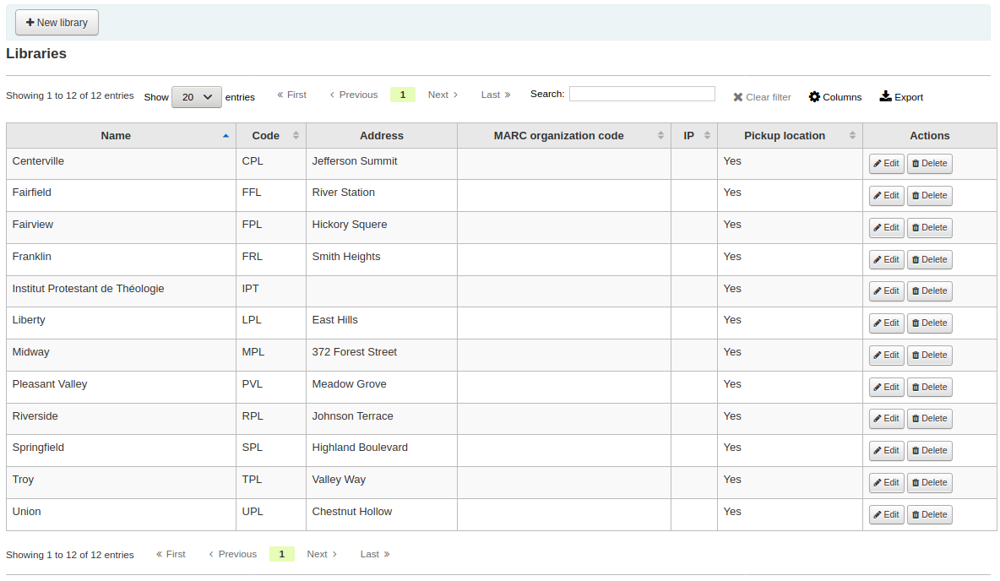
注释
您可以在管理模块的 ‘表格设置’ 中定制栏位（表格 Id: libraries）。
添加一个图书馆
添加一个新图书馆：
点击 ‘新图书馆’
表单会问一些关于图书馆的基本信息
图书馆代码不能包含空格且不能多于10个字符。此代码会被数据用于图书馆的唯一标识符。
图书馆名会在 OPAC 显示，所以该名字应当为读者所熟知。
接下来您可以输入该图书馆的一些基本联系信息

地址和联系信息字段用于定制每个图书馆的通知等
电子邮件地址为非必填项，但是每个图书馆应该填写
重要
图书馆的邮件地址虽然不是必填项，但是对于有发送和接受邮件需求时也是非常必要的
您也可以填写一个不同的用于 ‘恢复’ 的电子邮件地址。此地址用于收取所有回复的电子邮件。
注释
如果没有填写此值，Koha 将使用地址中的 ReplytoDefault 参数值
如果您不想使用该设置，也可以使用不同的 ‘Return-Path’ 电子邮件地址。该邮件地址会收集所有弹出消息。
注释
如果您没有填写该值，Koha 将使用参数 ReturnpathDefault 的地址
如果填写 URL 字段，则 OPAC 的馆藏字段会链接到该图书馆

OPAC 信息框用于在 OPAC 查询时当鼠标悬停于馆藏项时显示图书馆相关信息

IP 非必填项，除非想要限制图书馆员访问特定 IP 地址
重要
如果您已启用 AutoLocation，则需要填写 IP 地址
如果该图书馆有特定的 MARC 机构代码，您可以填写。如果留空，则该代码使用预置的 MARCOrgCode。
任何备注您都可以在这里填写。该信息不会在 OPAC 显示
最后，您可以选择是否显示馆藏的领取地点
注释
以上所列字段，只有’图书馆代码’和’图书馆名’为必填项
编辑/删除一个图书馆
您不能删除拥有读者和馆藏的任何图书馆。

每个图书馆的右侧都有一个“编辑”链接。点击链接编辑/修改有问题的图书馆细节。
重要
您不能编辑“图书馆代码”
图书馆群组
图书馆群组有四个宗旨：限制访问读者数据、限制 OPAC 检索、限制馆员检索和/或定义馆藏行为。
在这里： 更多 > 管理 > 基本参数 >图书馆群组
当访问此页面时您会看到已经加入系统群组的图书馆列表。

添加一个群组
点击屏幕顶部的’添加群组’按钮

给群组设定一个标题和简介。标题为必填项，标题会在馆员端和 OPAC 中显示。描述仅用于此页显示相关群组信息等。
You can limit staff from seeing other groups’ patrons by checking the box next to the ‘Limit patron data access by group’ option.
注释
This can be overridden with the user permission view_borrower_infos_ from_any_libraries.
If you want the group to show up in the library pulldown menu at the top of the OPAC (with OpacAddMastheadLibraryPulldown set to ‘Add’) and on the advanced search page you can check the ‘Use for OPAC search groups’ box.
If you want the group to appear in the library pulldown in the staff client advanced search, check the ‘Use for staff search groups’ box.

If you want to use this group to define holds rules, check the ‘Is local hold group’ box.
Adding a library to a group
Click on the ‘Add library’ button next to the group to add a library to this group. You will be presented with a list of the libraries that are not already in the group.
Adding a sub-group
If your system is very large, you can create sub-groups. Click on the ‘Actions’ button next to the group and select the ‘Add a sub-group’ option. Fill in the title and the description (optional) of the sub-group. The features will be inherited from the parent group.

Deleting a group
To delete a group, click on the ‘Actions’ button next to the group and select the ‘Delete’ option.

Circulation desks
Koha allows you to define several circulation desks within a single library. For example, if you have an adult circulation desk and a children’s circulation desk, or if you have a different desk for each floor or each department.
Make sure to enable the UseCirculationDesks system preference to use this functionality.
Get there: More > Administration > Basic parameters > Desks
Adding circulation desks
To add a new circulation desk, click on the ‘New desk’ button at the top of the page.
In the ‘Desk’ field, enter a name for your desk.
Choose the library in which this desk is.
Click ‘Submit’.
Editing a circulation desk
To edit an existing circulation desk, click on the ‘Edit’ button to the right of the desk to modify.

From there, you can change the name and/or the library of the desk.
Deleting a circulation desk
To delete an existing circulation desk, click on the ‘Delete’ button to the right of the desk to remove.
Item types
Koha allows you to organize your collection by item types and collection codes.
Get there: More > Administration > Basic parameters > Item types
Item types typically refer to the material type (Book, CD, DVD, etc), but can be used in any way that works for your library.

注释
You can customize the columns of this table in the ‘Table settings’ section of the Administration module (table id: table_item_type).
Adding item types
To add a new item type, simply click the ‘New item type’ button at the top of the Item types page.

In the ‘Item type’ field, enter a short code for your item type (maximum of 10 characters)
The the ‘Parent item type’ field, you can choose an item type that will act as a parent category for this item type. You can then define circulation rules based on those parent item types.
For example, you could have DVD and Blu-ray item types, and the DVD would be the parent of the Blu-ray item type.

You can then create a circulation rule for either Blu-ray only or DVD and Blu-ray (DVD (All))

The description is the plain text definition of the item type (for those with multiple languages installed you can translate the item type description in to all of those languages using the ‘Translate in to other languages’ link)
Item types can be grouped together for searching at the same time. For example you can put DVDs and Blu-rays in to a group called Movie and then they can be searched together. These groups are defined in the ITEMTYPECAT authorized value category.
You can choose to have an image associated with your item type
You can choose from a series of image collections
You can link to a remote image
Or you can just have no image associated with the item type
重要
If this option is not enabled, you can change the setting of the noItemTypeImages or OpacNoItemTypeImages.
To have your item type images appear in the OPAC you need to set OpacNoItemTypeImages to ‘Yes’
Get there: More > Administration > Global system preferences > OPAC
For items that you are suppressing from the OPAC you can hide their item type from being searched in the OPAC
Note This will not prevent those items to appear in search results, it will simply remove the item type from the advanced search form.
If you want to completely hide items from a certain item type, let’s say that you have a professional library with books reserved for staff and you don’t want those to appear in the OPAC, use the OpacHiddenItems system preference.
For items that do not circulate, check the ‘Not for loan’ options
Items marked ‘Not for loan’ will appear in the catalog, but cannot be checked out to patrons
For items that are not physical, but for which you still have circulation rules, such as museum passes or ebooks, you can set up automatic checkins.
Check the ‘Automatic checkin’ box
Schedule the cronjob misc/cronjobs/automatic_checkin.pl.
For items that you charge a rental fee for, there are several ways that rental fees can be charged to a patron by item type. A flat rental charge (process fee) or a daily/hourly rental charge.
For items that a library would charge a flat rental charge (process fee) for, enter the total fee you charge in the ‘Rental charge’ field. This will charge the patron on checkout (and renewal).
For items that a rental charge will be charged by the number of days the item is checked out for, enter the daily fee in the ‘Daily rental charge’. This will be charged to the patron upon checkout - the cost per day and how many days this item can be checked out to the patron. This daily rental charge will also be applied if/when a renewal occurs.
Check the ‘Daily rentals use calendar’, to exclude holidays from the the rental fee calculation.
For items that are loaned out hourly, enter the cost per hour in ‘Hourly rental charge’. Again, the total (hourly cost * number of hours loaned) will be charged to the patron upon checkout and renewal.
Check the ‘Hourly rentals use calendar’, to exclude holidays from the the rental fee calculation.
Each amount will charge the patron on checkout.
重要
Do not enter symbols in this field, only numbers and decimal points (ex. $5.00 should be entered as 5 or 5.00)
You can add a default replacement cost for this type of item. This is the amount that will be charged to the patron when lost if the item doesn’t have a replacement cost. If the item has a replacement cost, that is the amount that will be charged to the patron.
重要
Do not enter symbols in this field, only numbers and decimal points (ex. $5.00 should be entered as 5 or 5.00)
You can also add a processing fee that will be added to the replacement cost.
重要
Do not enter symbols in this field, only numbers and decimal points (ex. $5.00 should be entered as 5 or 5.00)
If you would like a message or alert to appear when items of this type are checked in you can enter that in the ‘Checkin message’ box

The check-in message type can be a ‘message’ or an ‘alert’. The only difference between these two is the styling. By default a message is blue

and an alert is yellow.
Some SIP devices need you to use a SIP-specific media type instead of Koha’s item type (usually lockers and sorters need this media type). If you use a device like this you’ll want to enter the SIP media type.
If this item type is only to be used in certain libraries, you can select them here. Select ‘All libraries’ if this item type is used across the library system.
注释
If this is left blank, ‘All libraries’ is assumed.
注释
To select more than one library, hold the ‘Ctrl’ key while selecting the libraries.
When finished, click ‘Save changes’
注释
All fields, with the exception of the ‘Item type’ will be editable from the item types list
Your new item type will now appear on the list
Editing item types
Each item type has an Edit button beside it. To edit an item simply click the ‘Edit’ button.
重要
You will not be able to edit the code you assigned as the ‘Item type’ but you will be able to edit the description for the item.
Deleting item types
Each item has a Delete button beside it. To delete an item type, simply click the ‘Delete’ button.
重要
You will not be able to delete item types that are being used by items within your system.

Authorized values
Authorized values can be used in several areas of Koha. They are lists of controlled terms, phrases or codes.
For example, one reason you would add an authorized value category would be to control the values that can be entered into MARC fields by catalogers.
Get there: More > Administration > Basic parameters > Authorized values
Existing authorized values categories
Koha installs with pre-defined authorized values categories that your library is likely to use or that are used by the system.
Asort1
Used for acquisitions statistical purposes. You can use this as statistical categories when creating a fund in acquisitions.
Asort2
Used for acquisitions statistical purposes. You can use this as statistical categories when creating a fund in acquisitions.
BOR_NOTES
Values for pre-defined patron messages that appear on the circulation screen and the patron’s account on the OPAC. Write the message you want to appear in the Description field. Note that this field is limited to 200 characters.

Bsort1
Values that can be entered to fill in the patron’s sort 1 field
Bsort2
Values that can be entered to fill in the patron’s sort 2 field
CAND
A list used in UNIMARC
CCODE
Collection codes (appears when cataloging and working with items)
This is normally mapped to items.ccode in the Koha database.
If you chose to install the default values for this category, you will have
Fiction (FIC)
Non-fiction (NFIC)
Reference (REF)
You can change those to suit your organization’s needs.
CONTROL_NUM_SEQUENCE
Used to generate control numbers in the advanced cataloging editor. Enter a string ending with a number as the authorized value and use the description to describe the type of number. For example: ‘sprLib0001’ ‘Springfield library’. In the advanced editor this will activate a new widget that will allow you to choose the type of number and generate the next number in the sequence.
COUNTRY
A list of country names used in UNIMARC 102 $a
DAMAGED
Descriptions for items marked as damaged (appears when cataloging and working with items).
This is normally mapped to items.damaged in the database.
If you chose to install the default values for this category, you will have
Damaged (1)
You can change those to suit your organization’s needs, but the values must be numerical.
警告
The authorized values for DAMAGED must be numerical.
DEPARTMENT
Departments are required by and are used in the course reserves module
ETAT
Used in French UNIMARC installations in field 995 $o to identify item status. Similar to NOT_LOAN
HINGS_AS
General holdings: acquisition status designator :: This data element specifies acquisition status for the unit at the time of the holdings report.
HINGS_C
General holdings: completeness designator
HINGS_PF
Physical form designators
HINGS_RD
General holdings: retention designator :: This data element specifies the retention policy for the unit at the time of the holdings report.
HINGS_UT
General holdings: type of unit designator
HOLD_CANCELLATION
Reasons why a hold might have been canceled. These are used when cancelling holds.
If you chose to install the default values for this category, you will have
Item could not be located on shelves (NOT_FOUND)
Item was found to be too damaged to fill hold (DAMAGED)
You can change those to suit your organization’s needs.
HSBND_FREQ
Delivery frequencies used by the housebound module. They are displayed on the housebound tab in the patron’s account in the staff interface.
If you chose to install the default values for this category, you will have
Every week (EW)
You can change those to suit your organization’s needs.
ILLSTATUS
Interlibrary loan (ILL) request statuses used in the ILL module.
ITEMTYPECAT
Search categories for item types. These values allow multiple item types to be searched at the same time.
To combine item types in categories, choose the category in the item type settings.
For example, an ITEMTYPECAT value could be ‘NEW’. This search category could be set for the item types ‘NEW BOOKS’ and ‘NEW DVDS’. This will replace NEW BOOKS and NEW DVDS item types in the advanced search form by ‘NEW’. When a patron chooses the searched for the category ‘NEW’, they will search multiple item types with a single search.
LANG
A list of ISO 639-2 standard language codes.
LOC
Shelving locations (usually appears when adding or editing an item).
This is normally mapped to items.location in the Koha database.
If you chose to install the default values for this category, you will have
Audio visual (AV)
Book cart (CART)
CART is used by UpdateItemLocationOnCheckin
Children’s area (CHILD)
Fiction (FIC)
General stacks (GEN)
New materials shelf (NEW)
On display (DISPLAY)
Processing center (PROC)
PROC can be used with NewItemsDefaultLocation and UpdateItemLocationOnCheckin.
Reference (REF)
Staff office (STAFF)
You can change those to suit your organization’s needs.
LOST
Descriptions for the items marked as lost (appears when adding or editing an item).
This is normally mapped to items.itemlost in the Koha database.
If you chose to install the default values for this category, you will have
Lost (1)
Long overdue (lost) (2)
Lost and paid for (3)
Missing (4)
You can change those to suit your organization’s needs, but the values must be numerical.
警告
The authorized values for LOST must be numerical.
OPAC_SUG
A list of reasons displayed in the suggestion form on the OPAC.
If you chose to install the default values for this category, you will have
The copy on the shelf is damaged (damaged)
Upcoming title by popular author (bestseller)
You can change those to suit your organization’s needs.
NOT_LOAN
Reasons why a title is not for loan (appears when adding or editing an item)
This is normally mapped to items.notforloan in the Koha database.
If you chose to install the default values for this category, you will have
On order (-1)
Not for loan (1)
Staff collection (2)
You can change those to suit your organization’s needs, but the values must be numerical.
警告
The authorized values for NOT_LOAN must be numerical.
Negative number values will still allow holds (use for ‘on order’ statuses, for example)
Positive numbers will not allow holds or checkouts.
A value of 0 means ‘for loan’.
ORDER_CANCELLATION_REASON
Reasons why an order might have been canceled, used in acquisitions
If you chose to install the default values for this category, you will have
No reason provided (0)
Out of stock (1)
Restocking (2)
You can change those to suit your organization’s needs.
PA_CLASS
Values used to group patron attributes together in the patron add form
PAYMENT_TYPE
Populates a dropdown list of custom payment types when paying fines
If you chose to install the default values for this category, you will have
Cash via SIP2 (SIP00)
Visa via SIP2 (SIP01)
Creditcard via SIP2 (SIP02)
You can change those to suit your organization’s needs.
qualif
Function codes (author, editor, collaborator, etc.) used in UNIMARC 7XX $4 (French)
RELTERMS
French terms of relations
REPORT_GROUP
A way to sort and filter your reports. These will appear as tabs in the saved reports page.
If you chose to install the default values for this category, you will have
Account (ACC)
Acquisitions (ACQ)
Catalog (CAT)
Circulation (CIRC)
Patrons (PAT)
Serials (SER)
You can change those to suit your organization’s needs.
REPORT_SUBGROUP
These values can be used to further sort and filter your reports.
Values here need to include the authorized value code from REPORT_GROUP in the Description (OPAC) field to link the subgroup to the appropriate group.

RESTRICTED
Restricted status of an item (appears when adding or editing an item)
This is normally mapped to items.restricted in the Koha database.
If you chose to install the default values for this category, you will have
Restricted access (1)
You can change those to suit your organization’s needs, but the values must be numerical.
警告
The authorized values for this category must be numerical.
RETURN_CLAIM_RESOLUTION
Reasons why a return claim has been resolved
If you chose to install the default values for this category, you will have
Returned by patron (RET_BY_PATRON)
Found in library (FOUND_IN_LIB)
You can change those to suit your organization’s needs.
ROADTYPE
Road types to be used in patron addresses (‘street type’ field in the patron form)
SIP_MEDIA_TYPE
STACK
Shelving control number (appears when adding or editing an item)
This is normally mapped to items.stack in the Koha database.
警告
The authorized values for this category must be numerical.
SUGGEST
Reasons for acceptance or rejection of suggestions in acquisitions (appears when managing suggestions)
If you chose to install the default values for this category, you will have
Bestseller (BSELL)
Shelf copy damaged (SCD)
Library copy lost (LCL)
Available via ILL (AVILL)
You can change those to suit your organization’s needs.
SUGGEST_FORMAT
List of item types to display in a drop down menu on the suggestion form on the OPAC.
If you chose to install the default values for this category, you will have
Audiobook (AUDIOBOOK)
Book (BOOK)
EBook (EBOOK)
DVD (DVD)
Large print (LP)
You can change those to suit your organization’s needs.
SUGGEST_STATUS
A list of additional custom status values for suggestions that can be used in addition to the default values.
TERM
Terms to be used in Course Reserves module. Enter terms that will show in the drop down menu when setting up a Course reserve. (For example: Spring, Summer, Winter, Fall).
UPLOAD
Categories to be assigned to file uploads. Without a category, an upload is considered temporary and may be removed during automated cleanup.
WITHDRAWN
Description of a withdrawn item (appears when adding or editing an item)
This is normally mapped to items.withdrawn in the Koha database.
If you chose to install the default values for this category, you will have
Withdrawn (1)
You can change those to suit your organization’s needs, but the values must be numerical.
警告
The authorized values for this category must be numerical.
YES_NO
A generic authorized value field that can be used anywhere you need a simple yes/no pull down menu.
If you chose to install the default values for this category, you will have
Yes (1)
No (0)
Add new authorized value category
In addition to the existing categories that come by default with Koha, librarians can add their own authorized value categories to control data that is entered into the system. To add a new category:
Click ‘New category’

Limit your Category to 10 characters (something short to make it clear what the category is for)
重要
Category cannot have spaces or special characters other than underscores and hyphens in it.
When adding a new category you’re asked to create at least one authorized value
Enter a code for your Authorized value into the ‘Authorized value’ field
重要
Authorized value is limited to 80 characters and cannot have spaces or special characters other than underscores and hyphens in it.
Use the Description field for the actual value that will be displayed. If you want something different to show in the OPAC, enter a ‘Description (OPAC)’
If you would like to limit this authorized value category to only specific libraries you can choose them from the ‘Branches limitation’ menu. To have it show for all libraries just choose ‘All branches’ at the top of the list.
If you have StaffAuthorisedValueImages and/or AuthorisedValueImages set to show images for authorized values you can choose the image under ‘Choose an icon’
Click ‘Save’
Your new category and value will appear on the list of Authorized values

Add new authorized value
New authorized values can be added to any existing or new category. To add a value:
Click ‘New authorized value for …’

Enter a code for your authorized value into the ‘Authorized value’ field
重要
Authorized value is limited to 80 characters and cannot have spaces or special characters other than underscores and hyphens in it.
Use the Description field for the actual value that will be displayed. If you want something different to show in the OPAC, enter a ‘Description (OPAC)’
If you would like to limit this authorized value category to only specific libraries you can choose them from the ‘Branches limitation’ menu. To have it show for all libraries just choose ‘All branches’ at the top of the list.
If you have StaffAuthorisedValueImages and/or AuthorisedValueImages set to show images for authorized values you can choose the image under ‘Choose an icon’
Click ‘Save’
The new value will appear in the list along with existing values

Deleting authorized values
To delete an authorized value, click on the ‘Delete’ button at the right of the authorized value.
Once there are no authorized values left in an authorized value category, you can delete the category.

Patrons and circulation
Settings for controlling circulation and patron information.
Patron categories
Patron categories allow you to organize your patrons into different roles, age groups, and patron types.
Get there: More > Administration > Patrons and circulation > Patron categories
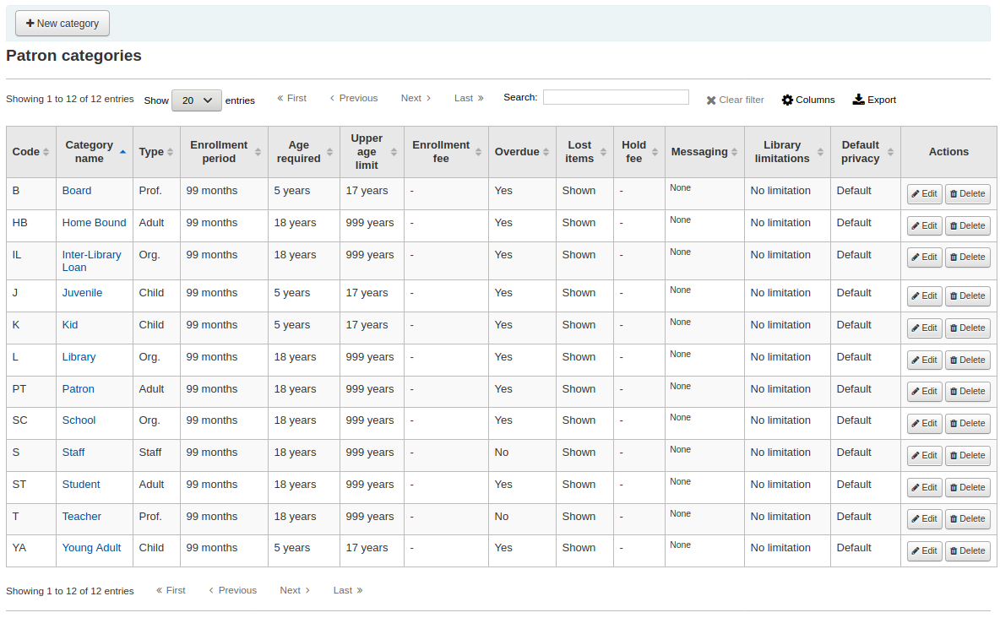
注解
You can customize the columns of this table in the ‘Table settings’ section of the Administration module (table id: patron_categories).
Adding a patron category
To add a new patron category click ‘New category’ at the top of the page
Category code: an identifier for your new category.
The category code is limited to 10 characters (numbers and letters) and must be unique.
This field is required in order to save your patron category. If left blank you will be presented with an error.
Description: a plain text version of the category.
The description will be visible throughout Koha.
This field is required in order to save your patron category. If left blank you will be presented with an error.
Enrollment period:
In months: should be filled in if you have a limited enrollment period for your patrons. For example, student cards expire after 9 months
Until date: you can choose a date when the cards will expire
This field is required in order to save your patron category. If left blank you will be presented with an error.
警告
You cannot enter both a month limit and a date until for one category. Choose to enter either one or the other.
Age required: minimum age (in years) requirement associated with the category. For example, an ‘Adult’ patron category could have a minimum age of 18 years; this means patrons must be at least 18 to be in the patron category.
When creating or updating a patron, a warning will appear if the patron is too young for this category.

This value is used by the update_patrons_category.pl cron job to change the category of patrons who are too young.
Upper age limit: maximum age (in years) associated with the category. For example, a ‘Children’ patron category could have an upper age limit of 18, meaning patrons can have children cards until they turn 18.
When creating or updating a patron, a warning will appear if the patron is too old for this category.
This value is used by the update_patrons_category.pl cron job to change the category of patrons who are too old.
Enrollment fee: enter the amount if you charge a membership fee for your patrons (such as those who live in another region).
警告
Only enter numbers and decimals in this field.
注解
Depending on your value for the FeeOnChangePatronCategory system preference, this fee will be charged on patron renewal as well as when they are first enrolled.
Overdue notice required: choose ‘Yes’ if you want patrons from this category to receive overdue notices. This will enable you to set the overdue notice triggers in the Tools module.
Lost items in staff interface: decide on a patron category basis if lost items are shown in the staff interface.
Shown: lost items are shown in the staff interface.
Hidden by default: lost items are hidden, but staff members can click ‘Show all items’ to see them.
注解
This is only applicable in the staff interface, so changing this value on patron categories who do not have access to the staff interface won’t make any difference.
Hold fee: enter the fee amount if you charge patrons from this category a fee for placing holds on items.
警告
Only enter numbers and decimals in this field.
Category type: choose one of the six main parent categories
Adult: most common patron type, usually used for a general ‘Patron’ category.
Child: children patrons can have a guardian to be attached to them.
Staff: library staff
Organizational: organizations can be used as guarantors for Professional patrons.
Professional: professional patrons can be linked to Organizational patrons.
Statistical: this patron type is used strictly for statistical purposes, such as in-house use of items.
This field is required in order to save your patron category. If left blank you will be presented with an error.
Branch limitations: if necessary, limit this patron category to only some branches in your library system. Select ‘All branches’ if you would like any library to be able to use this category.
To select more than one branch, hold the Ctrl key while making your selection.
Password reset in OPAC: decide whether patrons of this category are allowed to reset their password through the OPAC’s ‘Forgotten password’ function. By default, it will follow the rule set in the OpacResetPassword system preference.
Follow system preference OpacResetPassword.
Allowed: patrons of this category will be able to reset their password through the OPAC regardless of the setting in OpacResetPassword.
Not allowed: patrons of this category will not be able to reset their password through the OPAC regardless of the setting in OpacResetPassword.
Password change in OPAC: decide whether patrons of this category are allowed to change their password through the OPAC. By default, it will follow the rule set in the OpacPasswordChange system preference.
Follow system preference OpacPasswordChange.
Allowed: patrons of this category will be able to change their password through the OPAC regardless of the setting in OpacPasswordChange.
Not allowed: patrons of this category will be not able to change their password through the OPAC regardless of the setting in OpacPasswordChange.
Minimum password length: enter the minimum password length for patrons of this category. Leave blank to use the default length set in the minPasswordLength system preference.
Require strong password: decide whether to enforce a strong password policy (at least one uppercase letter, one lowercase letter and one digit) for patrons of this category. By default, it will follow the rule set in the RequireStrongPassword system preference.
Follow the system preference RequireStrongPassword.
Yes: patrons of this category will be required to have a strong password regardless of the setting in RequireStrongPassword.
No: patrons of this category will not be required to have a strong password regardless of the setting in RequireStrongPassword.
Block expired patrons: decide if this patrons from this category are blocked from performing actions in the OPAC if their card is expired. By default it will follow the rule set in the BlockExpiredPatronOpacActions preference.
Follow the system preference BlockExpiredPatronOpacActions.
Block: patrons of this category whose membership has expired will be blocked from renewing and placing holds in the OPAC, regardless of the setting in BlockExpiredPatronOpacActions.
Don’t block: patrons of this category whose membership has expired will not be blocked from renewing and placing holds in the OPAC, regardless of the setting in BlockExpiredPatronOpacActions.
Default privacy: choose the default privacy settings for patrons of this category.
Default: checkout history will be kept indefinitely, until either the batch_anonymize.pl script is run or there is a manual batch anonymization which is performed.
Never: checkout history is anonymized upon return. Statistics are kept, but the link between the checkout, the item and the patron is removed.
Forever: checkout history is never anonymized for patrons of this category, regardless of the cron job or manual anonymization.
This setting can be edited by the patron via the OPAC if you allow it with the OPACPrivacy system preference.
Exclude from local holds priority: choose whether holds for patrons of this category are given a priority.
Yes: holds for patrons of this category are not given special priority, regardless of the setting in LocalHoldsPriority.
No: holds for patrons of this category are subjected to the setting in LocalHoldsPriority.
Default messaging preferences for this patron category: assign advanced messaging preferences by default to the patron category
These default preferences can be changed on an individual basis for each patron. This setting is just a default to make it easier to set up messages when creating new patrons.
注解
This requires that you have EnhancedMessagingPreferences system preference set to ‘Allow’.
警告
These defaults will only be applied to new patrons that are added to the system. They will not edit the preferences of the existing patrons.
If you need to apply the default preferences to existing patrons, you can force those changes by running the borrowers-force-messaging-defaults script found in the misc/maintenance folder. Ask your system administrator for assistance with this script.
Circulation and fines rules
These rules define how your items are circulated, how and when fines are calculated and how holds are handled.
Get there: More > Administration > Patrons and circulation > Circulation and fines rules
The rules are applied from most specific to less specific, using the first found in this order:
same library, same patron category, same item type
same library, same patron category, all item types
same library, all patron categories, same item type
same library, all patron categories, all item types
default (all libraries), same patron category, same item type
default (all libraries), same patron category, all item types
default (all libraries), all patron categories, same item type
default (all libraries), all patron categories, all item types
The CircControl and HomeOrHoldingBranch also come in to play when figuring out which circulation rule to follow.
If CircControl is set to “the library you are logged in at” circulation rules will be selected based on the library you are logged in at
If CircControl is set to “the library the patron is from” circulation rules will be selected based on the patron’s library
If CircControl is set to “the library the item is from” circulation rules will be selected based on the item’s library where HomeOrHoldingBranch chooses if the item’s home library or its holding library is used.
If IndependentBranches is set to ‘Prevent’ then the value of HomeOrHoldingBranch is used in figuring out if the item can be checked out. If the item’s home library does not match the logged in library, the item cannot be checked out unless you are a superlibrarian.
重要
At the very least you will need to set a default circulation rule. This rule should be set for all item types, all libraries and all patron categories. That will catch all instances that do not match a specific rule. When checking out if you do not have a rule for all libraries, all item types and all patron categories then you may see patrons getting blocked from placing holds.
Defining circulation rules
Using the issuing rules matrix you can define rules that depend on patron category/item type combos. To set your rules, choose a library from the pull down (or ‘Standard rules for all libraries’ if you want to apply these rules to all branches):

From the matrix you can choose any combination of patron categories and item types to apply the rules to
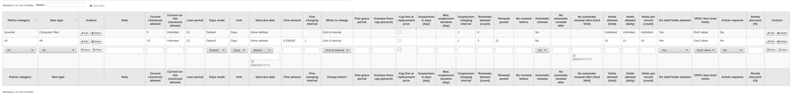
First choose which patron category you’d like the rule to be applied to. If you leave this to ‘All’ it will apply to all patron categories
Choose the item type you would like this rule to apply to. If you leave this to ‘All’ it will apply to all item types for this patron category
If an item type has a parent item type, the rule will be displayed as Parent -> Child. The number of current checkouts will be limited to either the maximum for the parent (including sibling types) or the specific type’s rule, whichever is less.

In the example above, there is a rule for the DVD item type with a maximum of 5 checkouts and a rule for Blu-ray, a child of DVD, with a maximum of 2 checkouts. A patron at this library will be able to check out a maximum of 2 Blu-rays in a total of 5 items of either DVD or Blu-ray types.
To summarize, a patron at this library would be able to take either : - 0 Blu-ray and a maximum of 5 DVDs - 1 Blu-ray and a maximum of 4 DVDs - 2 Blu-ray and a maximum of 3 DVDs
Add notes about your circulation rule into the notes field. This can be helpful to remember why and when something was last changed.
Limit the number of items of this type a patron of this category can have checked out at the same time by entering a number in the ‘Current checkouts allowed’ field.
If you’re allowing on-site checkouts then you may also want to set a limit on the number of items of this type patrons of this category can have on-site.
注释
This setting also depends on the ConsiderOnSiteCheckoutsAsNormalCheckouts preference
Define the period of time an item of this type can be checked out to a patron of this category by entering the number of units (days or hours) in the ‘Loan period’ box.
Define if the loan period should include closed days or not in the ‘Days mode’ column. The option chosen here will override the useDaysMode system preference for this particular rule.
The ‘Default’ option will take the option defined in the useDaysMode system preference
Choose the ‘Calendar’ option if you want to use the calendar to skip the days when the library is closed
Choose the ‘Datedue’ option if you want to push the due date to the next open day
Choose the ‘Days’ option if you want to ignore the calendar and calculate the due date directly
Choose the ‘Dayweek’ option if you want to use the calendar to push the due date to the next open matching weekday for weekly loan periods, or the next open day otherwise
Choose which unit of time, days or hours, that the loan period and fines will be calculated in in the ‘Unit’ column
You can also define a hard due date for a specific patron category and item type. The hard due date offers three options:
Exactly on: The due date of any item checked out with this rule will be set to the hard due date.
Before: Koha will calculate the normal loan period. If the calculated due date would be after or on the hard due date, the hard due date will be used instead.
After: Koha will calculate the normal loan period. If the calculated due date would be before the hard due date, the hard due date will be used instead.
‘Fine amount’ should have the amount you would like to charge for overdue items.
重要
Enter only numbers and decimal points (no currency symbols).
Enter the ‘Fine charging interval’ in the unit you set (ex. charge fines every 1 day, or every 2 hours). The finesCalendar system preference controls whether the days the library is closed will be taken into account or not.
‘When to charge’ is most handy in libraries that have a fine charging interval of more than 1 day.
End of interval: Given a grace period of 2 days and a fine interval of 7 days, the first fine will appear 7 days after the due date, it will always take one fine interval (7 days), before the first fine is charged.
Start of interval: Given a grace period of 2 days and a fine interval of 7 days, the first fine will appear 2 days after the due date and the second fine 7 days after the due date.
The ‘Fine grace period’ is the period of time an item can be overdue before you start charging fines. The FinesIncludeGracePeriod system preference controls if the grace period will be included when calculating the fine or not.
重要
This can only be set for the ‘Day’ unit, not in ‘Hours’
The ‘Overdue fines cap’ is the maximum fine per item for this patron and item type combination.
重要
If this field is left blank then Koha will not put a limit on the fines this item will accrue. A maximum fine amount for all overdues can be set using the MaxFine system preference.
If you would like to prevent overcharging patrons for a lost items, you can check the box under ‘Cap fine at replacement price.’ This will prevent the patron’s fines from going above the replacement price on the item.
注释
If the ‘Overdue fines cap’ is also set, the fine will be the lesser of the two, if both apply to the given overdue checkout.
If your library ‘fines’ patrons by suspending their account you can enter the number of days their fine should be suspended in the ‘Suspension in days’ field.
重要
This can only be set for the ‘Day’ unit, not in ‘Hours’
You can also define the maximum number of days a patron will be suspended in the ‘Max suspension duration’ setting
The ‘Suspension charging interval’ option is just like the ‘Fin charging interval’. For example, you could ‘fine’ a patron one day suspension for every two days overdue.
Next decide if the patron can renew this item type and if so, enter how many times they can renew it in the ‘Renewals allowed’ box.
If you allow unseen renewals (see UnseenRenewals), enter how many ‘unseen’ renewals patrons can make. This is not in addition to the regular renewals, but rather how many ‘unseen’ renewals can be made among the total number of renewals.
If you’re allowing renewals you can control how long the renewal loan period will be (in the units you have chosen) in the ‘Renewal period’ box.
If you’re allowing renewals you can control how soon before the due date patrons can renew their materials with the ‘No renewals before’ box.
Items can be renewed at any time if this value is left blank. Otherwise items can only be renewed if the item is due after the number in units (days/hours) entered in this box.
To control this value on a more granular level please set the NoRenewalBeforePrecision preference.
You can enable automatic renewals for certain items/patrons if you’d like. This will renew automatically following your circulation rules unless there is a hold on the item.
重要
You will need to enable the automatic renewal cron job for this to work.
重要
This feature needs to have the “no renewal before” column filled in or it will auto renew every day after the due date.
If you are using automatic renewals, you can use the ‘No automatic renewals after’ to limit the time a patron can have the item. For example: don’t allow automatic renewals after a checkout period of 80 days.
Similar to the hard due date setting, you can also stop automatic renewals after a specific date using the ‘No automatic renewal after (hard limit)’ setting.
If patrons of this category can place holds on items of this type, enter the total numbers of items (of this type) that can be put on hold in the ‘Holds allowed’ field.
Leave empty to have unlimited holds.
If you’d rather put a hold limit per patron category, independent of the item type, see the default checkout and hold policy by patron category section below.
If you want to have a hard hold limit, independent of patron category and item type, for this particular library, see the Default checkout, hold, and return policy section below.
If you want to have a hard hold limit, independent of patron category, item type, and across all libraries, see the maxreserves system preference.
You can also set a daily limit on the number of holds a patron can place.
While the two settings before limit the holds that can be placed across various records, the next setting is used to limit the number of holds that can be placed on one record at the same time. For example, for fiction books you might want to allow only one item to be placed on hold at the same time by the same user. But for serials where items represent different issues more than one hold at the same time is fine.
Next you can decide how the availability of items influences the ability to place a hold. The ‘On shelf holds allowed’ option has three settings:
Yes: This will allow to place holds on items at all times. It doesn’t matter if they are available or checked out.
If any unavailable: This will allow to place a hold as soon as one or more items of the record are checked out. It doesn’t matter if there are still one or more items available on the shelf.
If all unavailable: This will allow to place a hold as soon as all items on the record are checked out that could fill the hold. This is especially useful for libraries that don’t offer the service of getting items placed on hold off the shelf for patrons.
Under ‘OPAC item level hold’ you can decide if patrons are allowed to place item specific holds on the item type in question. The options are:
Allow: Will allow patrons the option to choose next available or a specific item.
Don’t allow: Will only allow patrons to choose next available item.
Force: Will only allow patrons to choose a specific item.
If you want to allow patrons of this category to be able to place article requests on items of this type, choose an option in the ‘Article requests’ column
No: patrons of this category will not be able to place article requests on items of this type
Yes: patrons of this category will be able to place article requests on items of this type, either on specific items (for example in the case of serial issues) or on entire records (for example in the case of monographs)
Record only: patrons of this category will be able to place article requests on records of this type, but not on specific items
Item only: patrons of this category will be able to place article requests on items of this type, but not on entire records
重要
If you want to use the article request functionality you need to enable it using the ArticleRequests system preference and configure the form using the other related preferences.
Finally, if you charge a rental fee for the item type and want to give this specific patron category a discount on that fee, enter the percentage discount (without the % symbol) in the ‘Rental discount’ field
When finished, click ‘Save’ to save your changes. To modify a rule, simply click the ‘Edit’ button either at the beginning or at the end of the row. The row of the rule being edited will be highlighted in yellow and the values will appear filled in at the bottom of the table. Edit the values at the bottom and click save.

注释
If, while editing a rule, you change either the patron category or the item type, it will create a new rule. You can do this to duplicate rules instead of creating new ones if the values are similar.
Alternatively, you can create a rule with the same patron category and item type and it will edit the existing one, as there can only be one rule per library- patron category-item type combination.
If you would like to delete your rule, click the ‘Delete’ button at the beginning or at the end of the rule row.
To save time you can clone rules from one library to another by choosing the clone option above the rules matrix. Please note that this will overwrite all rules already configured for that library.

After choosing to clone you will be presented with a confirmation message.

Default checkout, hold, and return policy
You can set a default maximum number of checkouts, a default maximum number of holds and a hold policy that will be used if none is defined below for a particular item type or category. This is the fall back rule for defaults.
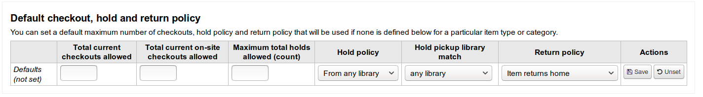
From this menu you can set a default to apply to all item types and patrons in the library if no other option is set in the forms below.
In ‘Total current checkouts allowed’ enter the total number of items patrons can have checked out at one time
In ‘Total current on-site checkouts allowed’ enter the total number of items patrons can have checked out on site at a time (OnSiteCheckouts needs to be set to ‘Enable’)
In ‘Maximum total holds allowed (count)’ enter the total number of pending holds patrons can have at the same time.
Control where patrons can place holds from using the ‘Hold Policy’ menu
From Any Library: Patrons from any library may put this item on hold. (default if none is defined)
From Local Hold Group: Only patrons from a library in the item home library’s local hold group may put this book on hold.
From Home Library: Only patrons from the item’s home library may put this book on hold.
No Holds Allowed: No patron may put this book on hold.
Control where patron can pick up holds using the “Hold Pickup Library Match” menu
any library
item’s hold group
patron’s hold group
item’s home library
item’s holding library
Control where the item returns to once it is checked in
Item returns home
Item returns to issuing branch
Item floats
When an item floats it stays where it was checked in and does not ever return ‘home’
Once your policy is set, you can unset it by clicking the ‘Unset’ link to the right of the rule
Default checkout and hold policy by patron category
For this library, you can specify the maximum number of checkouts, on-site checkouts and holds that a patron of a given category can have, regardless of the item type.

注释
If the total amount of checkouts, on-site checkout and holds for a given patron category is left blank, no limit applies, except possibly for a limit you define in the circulation rules above.
For example, if you have a rule in the matrix that says Board patrons are allowed 10 books and 5 DVDs but you want to make it so that Board patrons only have a total of 12 things checked out at once. If you enter 12 here and the patron has 10 books out already they will only be allowed 2 DVDs to equal the 12 total they’re allowed.
Default open article requests limit
If ArticleRequests is enabled, you can set a maximum number of open article requests a patron of a category can have at one time.
注解
This will only appear if the ArticleRequests system preference is enabled.
Choose the patron category you want to limit.
Enter the number of open article requests a patron of this category can have at one given time
Click ‘Add’
Default article request fees
If ArticleRequests is enabled, you can set the fee a patron from a given category (or any category) needs to pay in order to request the article.

注解
This will only appear if the ArticleRequests system preference is enabled.
Choose the patron category for which you want to add a fee, or choose ‘All’ to set an overall fee for all patrons
注解
The fee specific to a patron category will supercede the fee for all categories.
For example, if you set a fee for all categories to 2$ and a fee for Faculty to 3$, Faculty members will be charged 3$ and any other patron will be charged 2$.
Enter the fee amount (use a period as the decimal and don’t enter any symbols, e.g. enter 5.00 for 5$)
Click ‘Add’
The fee is charged to the patron when the request is placed.
When placing the request, either through the staff interface or the OPAC, a message appears to inform the staff member or the patron that the patron will be charged for every request and the amount of the fee.
Default lost item fee refund on return policy
Here, you can specify the default policy for lost item fees on return. This policy will apply to this library. This rule is to be used with the RefundLostOnReturnControl system preference.
You can limit the number of days during which a lost item is refundable using the NoRefundOnLostReturnedItemsAge system preference.
Default holds policy by item type
For this library, you can edit hold and return policies for a given item type, regardless of the patron’s category.

The various hold policies have the following effects:
From any library: Patrons from any library may put this item on hold. (default if none is defined)
From local hold group: Only patrons from libraries in the same item’s home library hold groups may put this book on hold.
From home library: Only patrons from the item’s home library may put this book on hold.
No holds allowed: No patron may put this book on hold.
重要
Note that if the system preference AllowHoldPolicyOverride set to ‘allow’, these policies can be overridden by your circulation staff.
重要
These policies are applied based on the ReservesControlBranch system preference.
Control where patron can pick up holds using the “Hold Pickup Library Match” menu
any library
item’s hold group
patron’ hold group
item’s home library
item’s holding library
The various return policies have the following effects:
Item returns home: The item will prompt the librarian to transfer the item to its home library
重要
If the AutomaticItemReturn preference is set to automatically transfer the items home, then a prompt will not appear
Item returns to issuing branch: The item will prompt the librarian to transfer the item back to the library where it was checked out
重要
If the AutomaticItemReturn preference is set to automatically transfer the items home, then a prompt will not appear
Item floats: The item will not be transferred from the branch it was checked in at, instead it will remain there until transferred manually or checked in at another branch
For example you might allow holds at your libraries but not what New items or DVDs to be placed on hold by other branches so you can set the ‘Hold policy’ to ‘From home library’ so that those items can only be placed on hold if the items’ owning library and the patron’s home library are the same. You can also block holds completely on specific item types from this form. This is also how you can set up floating item types and types that remain with their home library.
Patron attribute types
Patron attributes can be used to define custom fields to associate with your patron records. In order to enable the use of custom fields you need to set the ExtendedPatronAttributes system preference.
Get there: More > Administration > Patrons and circulation > Patron attribute types
A common use for this field would be for a student ID number or a Driver’s license number.

Adding patron attributes
To add a new patron attribute type, click the ‘New patron attribute type’ button at the top of the page

In the ‘Patron attribute type code’, enter a short code to identify this field
重要
This field is limited to 10 characters (numbers and letters only)
重要
This setting cannot be changed after an attribute is defined
In the ‘Description’ field, enter a longer (plain text) explanation of what this field will contain
Check the box next to ‘Repeatable’ to let a patron record have multiple values of this attribute.
重要
This setting cannot be changed after an attribute is defined
If ‘Unique identifier’ is checked, the attribute will be a unique identifier which means, if a value is given to a patron record, the same value cannot be given to a different record.
Unique attributes can be used as match points on the patron import tool
重要
This setting cannot be changed after an attribute is defined
Check ‘Display in OPAC’ to display this attribute on a patron’s details page in the OPAC.
Check ‘Editable in OPAC’ to enable patrons to edit this information in the OPAC.
Check ‘Searchable’ to make this attribute searchable in the staff patron search.
Check ‘Display in patron’s brief information’ to make this attribute visible in the patron’s short detail display on the left of the checkout screen and other patron pages

Authorized value category; if one is selected, the patron record input page will only allow values to be chosen from the authorized value list.
You will first need to add an authorized value list for it to appear in this menu
Get there:More > Administration > Basic parameters > Authorized values
重要
an authorized value list is not enforced during batch patron import.
If you would like this attribute to only be used by specific branches you can choose those branches from the ‘Branches limitation’ list. Choose ‘All branches’ to show it for all libraries.
重要
Note that items with locations already set on them will not be altered. The branch limitation only limits the choosing of an authorized value based on the home branch of the current staff login. All authorized values for item records (LOC, LOST, CCODE, etc) will show in the OPAC for all patrons.
If you’d like to only show this attribute on patrons of one type choose that patron type from the ‘Category’ pull down
If you have a lot of attributes it might be handy to group them so that you can easily find them for editing. If you create an Authorized value for PA_CLASS it will show in the ‘Class’ pull down and you can then change your attributes page to have sections of attributes

Click Save to save your new attribute
Once added your attribute will appear on the list of attributes and also on the patron record add/edit form

If you have set up classes for organizing attributes they will appear that way on the add/edit patron form

Editing/deleting patron attributes
Each patron attribute has an edit and a delete link beside it on the list of attributes.
Some fields in the attribute will not be editable once created:
Patron attribute type code
Repeatable
Unique identifier
You will be unable to delete an attribute if it’s in use.

Library transfer limits
Limit the ability to transfer items between libraries based on the library sending, the library receiving, and the collection code involved.
Get there: More > Administration > Patrons and circulation > Library transfer limits
These rules only go into effect if the preference UseBranchTransferLimits is set to ‘enforce’.
Before you begin you will want to choose which library you are setting these limits for.

Transfer limits are set based on the collections codes you have applied via the Authorized values administration area.

Collection codes will appear as tabs above the checkboxes:

Check the boxes for the libraries you allow your items to be transferred to for the collection code you have selected at the top (in the example below - FIC)

In the above example, Centerville library will allow patrons from all libraries except Liberty and Franklin to request items from their branch.
Transport cost matrix
The transport cost matrix lets a library system define relative costs to transport books to one another. In order for the system to use this matrix you must first set the UseTransportCostMatrix preference to ‘Use’.
重要
The transport cost matrix takes precedence in controlling where holds are filled from, if the matrix is not used then Koha checks the StaticHoldsQueueWeight.
Costs are decimal values between some arbitrary maximum value (e.g. 1 or 100) and 0 which is the minimum (no) cost. For example, you could just use the distance between each library in miles as your ‘cost’, if that would accurately reflect the cost of transferring them. Perhaps post offices would be a better measure. Libraries sharing a post office would have a cost of 1, adjacent post offices would have a cost of 2, etc.
To enter transport costs simply click in the cell you would like to alter, uncheck the ‘Disable’ box and enter your ‘cost’

After entering in your cost, hit ‘Enter’ on your keyboard or click the ‘Save’ button at the bottom of the matrix to save your changes.
注释
A NULL value will make no difference where the From and To libraries are the same library. However, as a best practice, you should put a 0 in there. For all other To/From combinations, a NULL value will cause that relationship to act as if it has been disabled. So, in summary, don’t leave any of the values empty. It’s best to always put a number in there ( even if you choose to disable that given To/From option ).
Item circulation alerts
Libraries can decide if they want to have patrons automatically notified of circulation events (check ins and check outs).
Get there: More > Administration > Patrons and circulation > Item circulation alerts
These preferences are set based on patron types and item types.
重要
These preference can be overridden by changes in the individual patron’s messaging preferences.
To set up circulation alerts:
Choose your library from the pull down at the top of the screen

To set preferences for all libraries, keep the menu set to ‘Default’
By default all item types and all patrons are notified of check ins and check outs. To change this, click on the item/patron type combo that you would like to stop notices for.
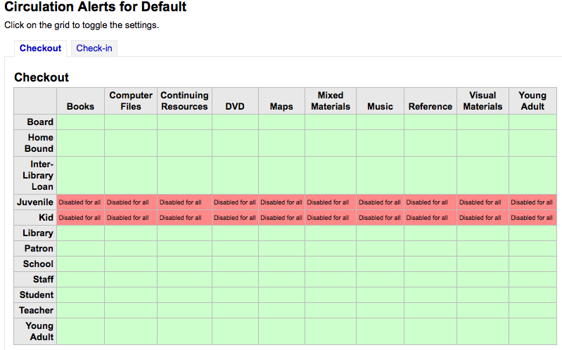
In the above example, Juveniles and Kids will not receive check out notices.
Cities and towns
To standardize patron input you can define cities or towns within your region so that when new patrons are added librarians simply have to select the town from a list instead of having to type the town and zip (or postal) code information.
Get there: More > Administration > Patrons and circulation > Cities and towns
Adding a city
To add a new city, click the ‘New city’ button at the top of the page and enter the city name, state, zip/postal code and country.

One you click Submit, your city will be saved and will be listed on the Cities and towns page

Cities can be edited or deleted at any time.
Viewing cities on patron add form
If you have defined local cities using the ‘New city’ form, then when adding or editing a patron record you will see those cities in a pull down menu to make city selection easy.

This will allow for easy entry of local cities into the patron record without risking the potential for typos or mistaken zip/postal codes.
Accounting
Get there: More > Administration > Accounting
This section deals with the parameters used in managing the patron accounts.
Debit types
Get there: More > Administration > Accounting > Debit types
This is where you define the manual fees you can charge patrons.

When you first get to the page, you will only see the manual fees that are already defined in your system.
You can see the default system fees by clicking “Show all debit types”.
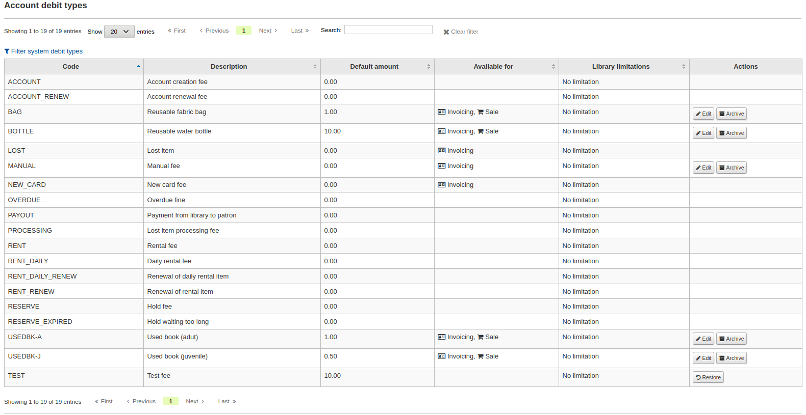
You can go back to seeing only the manual fees by clicking “Filter system debit types”.
System debit types
Several debit types come installed with Koha. Most of them are automatic fees that are added according to the policies you set up elsewhere in Koha.
ACCOUNT (Account creation fee): this is charged to the patron’s account upon registration. The fee can be changed in the patron category settings under ‘Enrollment fee’.
ACCOUNT_RENEW (Account renewal fee): this is charged to the patron’s account when their account is renewed. Like the ACCOUNT debit type above, this can be changed in the patron category settings under ‘Enrollment fee’.
LOST (Lost item): this is charged to the patron’s account when an item in their file is declared lost. The amount depends on the item’s ‘replacement cost’ field or on the item type’s default replacement cost. It can also be added manually in the manual invoices tab.
MANUAL (Manual fee): this is the default manual fee installed with Koha. This is not charged automatically by Koha, but can be added to a patron’s account manually in the manual invoices tab.
NEW_CARD (New card fee): this is another default manual fee installed with Koha. This will not be charged automatically by Koha, but can be added to a patron’s account manually in the manual invoices tab.
OVERDUE (Overdue fine): this is charged automatically to the patron’s account when they have overdue items. The amount for overdue fines are set in the circulation and fines rules.
PAYOUT (Payment from library to patron): this is used when the library reimburses the patron (for an over payment for example).
PROCESSING (Lost item processing fee): this is charged automatically to the patron’s account when an item in their file is declared lost. The amount is set by item type under ‘Processing fee (when lost)’.
RENT (Rental fee): this is charged automatically to the patron’s account upon checkout if the item type has a rental charge.
RENT_DAILY (Daily rental fee): this is charged automatically to the patron’s account upon checkout if the item type has a daily rental charge.
RENT_DAILY_RENEW (Renewal of daily rental item): this is charged automatically to the patron’s account upon renewal if the item type has a daily rental charge.
RENT_RENEW (Renewal of rental item): this is charged automatically to the patron’s account upon renewal if the item type has a rental charge.
RESERVE (Hold fee): this is charged automatically to the patron’s account upon placing a hold. The amount depends on the ‘Hold fee’ amount in the patron’s category settings.
RESERVE_EXPIRED (Hold waiting too long): this is charged automatically to the patron’s account if they haven’t picked up their hold after the number of days defined in the ExpireReservesMaxPickUpDelay system preference. The amount is set in the ExpireReservesMaxPickUpDelayCharge system preference.
Adding a new debit type
To add a new debit type:
Click ‘New debit type’

Enter a code (limited to 64 letters)
Enter the default amount
注释
Staff will be able to change this amount when adding the charge to the patron’s account, if necessary
注释
Do not enter currency symbols. Only write the amount with a decimal point (for example, 5 or 5.00 instead of $5)
Write a description
This description will be used in the drop-down menu when adding a new charge to a patron’s account as well as in their transaction history
If this debit type can be added manually by staff to a patron’s account via the manual invoices, check the ‘Can be added manually?’ check box
If this debit type is only to be used in specific branches, you can select the libraries in ‘Libraries limitation’
注释
You can select more than one library by pressing the ‘Ctrl’ key while selecting.
Click ‘Save’
Editing an existing debit type
You can only modify the debit types you have added, as well as the ‘Manual fee’.
To edit a debit type:
Click the ‘Edit’ button to the right of the debit type
Modify any field
Click ‘Save’
Archiving a debit type
If there is a debit type you don’t need anymore, you can archive it.
注释
There is no way to delete a debit type since they are used in the patron’s accounting section.
To archive a debit type, simply click the ‘Archive’ button to the right of the debit type.
Restoring an archived debit type
If you need to use an archived debit type again, simply click on the ‘Restore’ button to the right of the debit type.
This will make it available again.
Credit types
Get there: More > Administration > Accounting > Credit types
This is where you define the manual credits you can give patrons.
When you first get to the page, you will only see the credits that are already defined in your system.
You can see the default system credit types by clicking “Show all credit types”.

You can go back to seeing only the manual credit types by clicking “Filter system credit types”.
System credit types
Several credit types come installed with Koha. Most of them are automatic credits that are added according to the policies you set up elsewhere in Koha. They can not be deleted.
CANCELLATION (Canceled charge): this is used when cancelling a charge in a patron’s account
CREDIT (Credit): this is used for manual credits to give to your patrons.
DISCOUNT (A discount applied to a patrons fine): this is used to discount fines and charges.
FORGIVEN (Forgiven): this is used for manual credits to give to your patrons.
LOST_FOUND (Lost item fee refund): this is used when a previously lost item is returned. If you refund the lost fees (see Default lost item fee refund on return policy), this credit will be applied to refund the fee.
OVERPAYMENT (Over payment refund): this is automatically applied to a patron’s account when they paid too much for a fee. This is mostly used when backdating check-ins where the patron has already paid the full fine.
PAYMENT (Payment): as the name states, this is used to indicate fee payments.
PURCHASE (Purchase): this is used when a payment is made through the point of sale module.
REFUND (A refund applied to a patrons fine): this is used when refunding the payment of a fine or charge.
WRITEOFF (Writeoff): this is used when writing off a fine or charge.
Adding a new credit type
To add a new credit type:
Click ‘New credit type’
Enter a code (limited to 64 letters)
Write a description
This description will be used in the drop-down menu when adding a new credit to a patron’s account as well as in their transaction history
If this credit type can be added manually by staff to a patron’s account via the manual credit, check the ‘Can be added manually?’ check box
If you need this credit type to be sequentially numbered, check the ‘Enable credit number’. The format of the number is defined in the AutoCreditNumber system preference.
If this credit type is only to be used in specific branches, you can select the libraries in ‘Libraries limitation’
注释
You can select more than one library by pressing the ‘Ctrl’ key while selecting.
Click ‘Save’
Editing an existing credit type
You can only modify the credit types you have added.
To edit a credit type:
Click the ‘Edit’ button to the right of the credit type
Modify any field
Click ‘Save’
Archiving a credit type
If there is a credit type you don’t need anymore, you can archive it.
注释
There is no way to delete a credit type since they are used in the patron’s accounting section.
To archive a credit type, simply click the ‘Archive’ button to the right of the credit type.
Restoring an archived credit type
If you need to use an archived credit type again, simply click on the ‘Restore’ button to the right of the credit type.
This will make it available again.
Cash registers
Get there: More > Administration > Accounting > Cash registers
This feature is enabled through the UseCashRegisters system preference.
If you have no cash registers already defined, you will be invited to create one.
Otherwise, you will see the list of all your cash registers.
In the ‘Actions’ columns, you can choose to edit your cash registers, make one of them default or remove the default status, and archive or restore an archived register.
The default status is only useful in libraries that have more than one register per branch. The default register will be pre-selected when entering a payment. If there is only one cash register per branch, the branch’s cash register will be selected when paying.
Adding a new cash register
Click on ‘New cash register’
Give your cash register a name
Optionally you can also add a description
Choose in which library this cash register is located
And finally, enter the initial float, i.e. the amount in the cash register
Click ‘Add’
Catalog administration
Set these controls before you start cataloging on your Koha system.
Get there: More > Administration > Catalog
MARC bibliographic frameworks
Think of frameworks as templates for creating new bibliographic records. Koha comes with some predefined frameworks that can be edited or deleted, and librarians can create their own frameworks for content specific to their libraries.
Get there: More > Administration > Catalog > MARC bibliographic frameworks

重要
Do not delete or edit the Default framework since this will cause problems with your cataloging records - always create a new template based on the Default framework, or alter the other frameworks.
Add new framework
To add a new framework
Click ‘New framework’

Enter a code of 4 or fewer characters
Use the Description field to enter a more detailed definition of your framework
Click ‘Submit’
Once your framework is added click Actions then ‘MARC structure’ to the right of it on the list of frameworks

You will be asked to choose a framework to base your new framework on, this will make it easier than starting from scratch
Once your framework appears on the screen you can edit or delete each field by following the instructions for editing fields and subfields
Edit existing frameworks
Clicking Actions and then ‘Edit’ to the right of a framework will only allow you to edit the description for the framework:
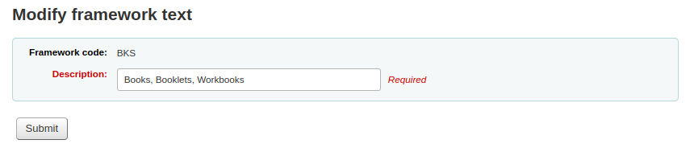
Edit framework fields and subfields
Frameworks are made up of MARC fields (tags) and subfields. To make edits to the fields and subfields associated with the framework you must click on ‘Actions’ and then ‘MARC structure’.
Edit a MARC field (tag)
After clicking on ‘MARC structure’ you will be taken to a screen listing all the available tags for that framework and you can search for the tag you need. To make edits to a MARC field click on ‘Actions’ on the right of the field then ‘Edit tag’.
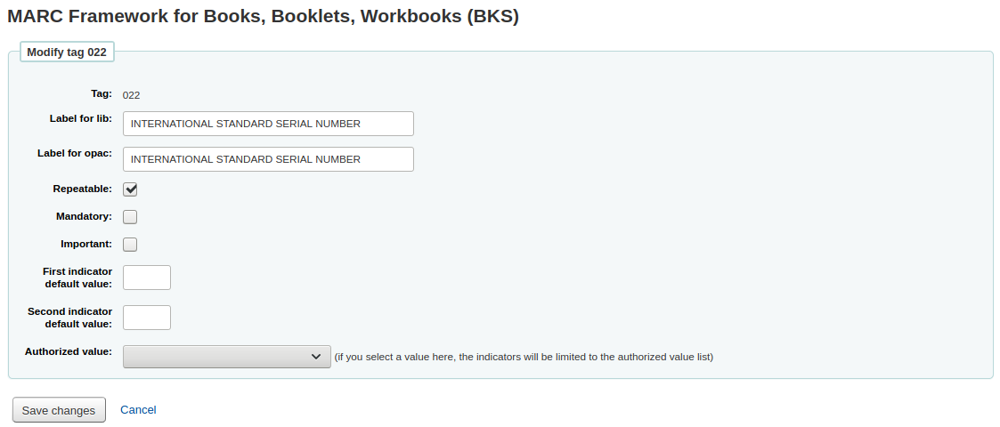
The next screen shows details of the tag.
Each field has a tag (which is the MARC tag) that is uneditable
The ‘Label for lib’ is what will show in the staff interface if you have advancedMARCeditor set to display labels
The ‘Label for OPAC’ is what will show on the MARC view in the OPAC
If you check ‘Repeatable’ then the field will have an icon next to it allowing you to add multiples of that tag
If you check ‘Mandatory’ the record cannot be saved unless the field has a value. A ‘Required’ flag will display as a prompt
If you check ‘Important’, the field will generate a warning if it is not filled, but unlike ‘Mandatory’, you will still be able to save your record nonetheless
If you add default values for indicators here these will be pre-filled to save time when cataloging but can still be edited if required
‘Authorized value’ is where you define an authorized value pull down list for your catalogers
注释
The authorized value option at field level does not work.
Edit a MARC subfield
To edit the subfields associated with the tag, click ‘Actions’ then ‘Edit subfields’ to the right of the tag on the framework field list. Each subfield has its own tab which contains three sections - Basic constraints, Advanced constraints and Other options.
For each subfield you can set the following basic constraint options

Subfield code: this is the MARC subfield code, this wouldn’t normally be changed
Text for librarian: what appears before the subfield in the staff interface
Text for OPAC: what appears before the field in the OPAC
If left empty, the text for librarian is used instead
Repeatable: the field will have an icon next to it allowing you to add multiples of the subfield
Mandatory: the record cannot be saved unless you have a value assigned to this subfield. A ‘Required’ flag will display as a prompt
Important: this indicates that a field is not mandatory, but important. If you try to save a record where an important field is empty, you will get a warning, but the record will still be saved.
Managed in tab: defines the tab where the subfield is shown.
重要
All subfields of a given field must be in the same tab or ignored. Ignore means that the subfield is not managed.
重要
When importing records, subfields that are managed in tab ‘ignore’ will be deleted. If you still wish to keep the subfields, but hide them, use the ‘Visibility’ options below.
For each subfield you can set the following advanced constraint options
Default value: defines what you want to appear in the field by default, this will be editable, but it saves time if you use the same text over and over or the same value in a field often.
注释
There are several values that you can use here that will be replaced automatically when a new record is created:
<<MM>> - the current month, 2 digits
<<DD>> - the current day of month, 2 digits
<<YYYY>> - the current year, 4 digits
<<USER>> - the username of the currently logged in user
For example: a default of “<<MM>>/<<DD>>/<<YYYY>>” (without quotes) will print the current date in the form of “01/21/2021”
Visibility: allows you to select from where this subfield is visible/hidden, simply check the boxes where you would like the field to show and uncheck the boxes where you would like it hidden.
注释
The Editor checkbox controls whether this subfield will display within cataloging editor for this framework. If you check Collapsed the subfield will be hidden in the editor but will be displayed if the field label is clicked to expand all subfields

Is a URL: if checked, it means that the subfield is a URL and can be clicked
Link: if you enter an index name here, a link appears after the subfield in the MARC detail view in the staff interface. If the librarian clicks on the link, a catalog search is done using the index and the content of the subfield.
Koha link: this field is used to create a link between the MARC subfield and a column in the items, biblioitems and biblio database tables. Whenever a record is added or changed, this mapping will be used to update the linked database column. The information from the database columns is used as a way to quickly look up important information without having to parse the full MARC record. It is used for displaying information in a lot of pages and can also be used in reports.
It is possible to map multiple MARC subfields to the same database column. The first existing mapped subfield will be saved into the database. Usage example: For a MARC21 installaton with both RDA and AACR2 records where some records store the publication data in 260 and others in 264 both fields can be mapped to the database columns for publisher, publication date and publication year.
The mappings can be changed on this page or from the Koha to MARC mapping page.
Warning
The Koha links should not be changed after data has been added to your catalog. If you need to change or improve them, you must ask your system administrator to run misc/batchRebuildBiblioTables.pl. This will update the values in the database columns for all your records.
For each subfield you can set the following Other option values
Authorized value: means the value cannot by typed, but must be chosen from a pull down generated by the authorized value list
In the example above, the 504a field will show the MARC504 authorized values when cataloging

Thesaurus: means that the value is not free text, but must be searched in the authority/thesaurus of the selected category
Plugin: means the value is calculated or managed by a plugin. Plugins can do almost anything.
Examples:
For call numbers there is an option to add a call number browser next to the the call number subfield so that you can identify which call numbers are in use and which are not. Simply choose the cn_browser.pl plugin. Learn more in the cataloging section of this manual.
If you’d like to let file uploads via cataloging you can choose the upload.pl plugin and this will allow you to upload files to Koha to link to your records.
In UNIMARC there are plugins for every 1xx fields that are coded fields. The plugin is a huge help for cataloger! There are also two plugins (unimarc_plugin_210c and unimarc_plugin_225a that can “magically” find the editor from an ISBN, and the collection list for the editor)
If you would like to enable an autocomplete search for publishers in 260b and 264b you can set the plugin to marc21_field_260b.pl. When you start typing in a publisher name you will be given search results based on publisher names already in the catalog.
To save your changes simply click the ‘Save changes’.
Add fields to frameworks
If a framework doesn’t contain a field that you require you may need to add it. To add a field to a framework click the ‘New tag’ button at the top of the framework definition
This will open up a blank form for entering MARC field data

Enter the information about your new tag:
The ‘Tag’ is the MARC field number
The ‘Label for lib’ is the text that will appear in the staff interface when in the cataloging module
The ‘Label for OPAC’ is the text that will appear in the OPAC when viewing the MARC version of the record
If this field can be repeated, check the ‘Repeatable’ box
If this field is mandatory, check the ‘Mandatory’ box
If this field is not mandatory but is important, check the ‘Important’ box
If the important field is not filled upon saving the record, there will be a warning, but the user will still be able to save the record
You can enter default values for indicators in the ‘First indicator default value’ and ‘Second indicator default value’ field
If you want this field to be a pull down with limited possible answers, choose which ‘Authorized value’ list you want to use
注释
The authorized value option at field level does not work.
When you’re finished, click ‘Save changes’ and your new tag will be displayed in the framework field list.
You will need to add at least one subfield to your new tag before it will appear in your framework when you are cataloging.
Click on the ‘Actions’ button for your new tag and then ‘Edit subfields’. Click on the ‘New’ tab and enter your subfield code. The process for entering the remainder of the settings for the new subfield is the same as those found in the editing fields and subfields in frameworks section of this manual.
Import/export frameworks
Next to each framework is a link to either import or export the framework.
Export framework
To export a framework simply click the ‘Export’ link to the right of framework title.

When you click ‘Export’ you will be prompted to choose what format to export the file in.

A framework exported this way can be imported into any other Koha installation using the import framework option.
Import framework
An easy way to create a new framework is to import one created for your or another Koha installation. This framework would need to be exported from the other system using the instructions above to be available for import here.
To import a framework you first need to create a new framework. Once you have that framework, click Actions then ‘Import’ to the right of the new framework.
You will be prompted to find a file on your computer to import into the framework.

You will be asked to confirm your actions before the file is imported.
As your file is uploaded you will see an image that will confirm that the system is working.
Once your import is complete you will be brought to the framework edit tool where you can make any changes you need to the framework you imported.
Koha to MARC mapping
While Koha stores the entire MARC record, it also stores common fields for easy access in various tables in the database. Koha to MARC mapping is used to tell Koha where to find these values in the MARC record. In many cases you will not have to change the default values set by in this tool on installation, but it is important to know that the tool is here and can be used at any time.
Get there: More > Administration > Catalog > Koha to MARC mapping
The table shows all the database fields that can be mapped to MARC fields.
To add a new mapping, click on the ‘Add’ button to the right of the appropriate field.
Write in the MARC field and subfield you would like to map, separated by a comma, to this Koha field and click the ‘OK’ button.
注释
It is possible to link more than one MARC field to a database field. For example, you could link both 260$a and 264$a to the biblioitems.place field.
If you would like to clear the mapping for a database field, click the ‘Remove’ button.
注释
All changes are immediate.
MARC bibliographic framework test
Checks the MARC structure.
Get there: More > Administration > Catalog > MARC bibliographic framework test
If you change your MARC bibliographic framework it’s recommended that you run this tool to test for errors in your definition.

Classification sources
Source of classification or shelving scheme are mapped to field 952$2 and 942$2 in Koha’s MARC bibliographic frameworks and stored in the items.cn_source and biblioitems.cn_source fields in the database.
Get there: More > Administration > Catalog > Classification sources

Commonly used classification sources are:
ddc - Dewey Decimal Classification
lcc - Library of Congress Classification
If you chose to install classification sources during Koha’s installation, you would see other values too:
ANSCR (sound recordings)
SuDOC classification
Universal Decimal Classification
Other/Generic Classification
Adding/editing classification sources
You can add your own source of classification by using the ‘New classification source’ button. To edit use the ‘Edit’ button.
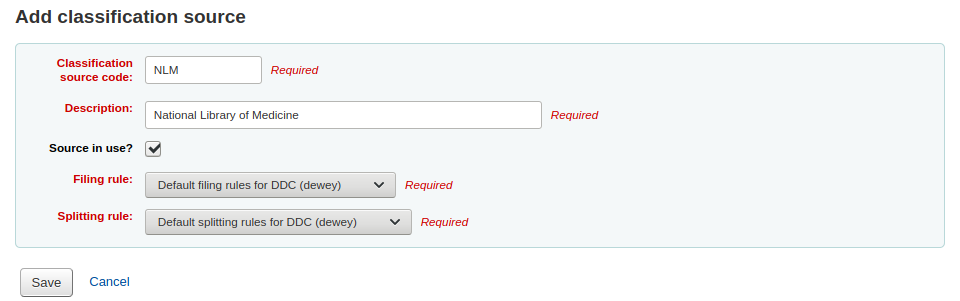
When creating or editing:
Enter a code. The code is limited to 10 characters and must be unique.
注解
The code is not editable once it has been created.
Enter a description. The description is used in the drop-down lists in the cataloging module.
Check the ‘Source in use?’ checkbox if you want the value to appear in the drop-down list for this category.
Select the appropriate filing rule from the drop-down list.
Select the appropriate splitting rule from the drop-down list.
Classification filing rules
Filing rules determine the order in which items are placed on shelves. Filing rules normalize call numbers in order for Koha to be able to compare them and sort them in the right order.
For example, a Dewey call number such as ‘636.8/07 SHAW’ will become ‘636_800000000000000_07_SHAW’ in order to be sorted.
The sorted call number is saved in the items.cn_sort or biblioitems.cn_sort fields in the database
Values that are pre-configured in Koha are:
Dewey
LCC
Generic
Filing rules are mapped to Classification sources. You can setup new filing rules by using the ‘New filing rule’ button. To edit, use the ‘Edit’ button.
When creating or editing:
Enter a code. The code is limited to 10 characters and must be unique.
注解
The code is not editable once it has been created.
Enter a description. The description is used in the drop-down list when creating or editing a classification source.
Choose an appropriate filing routine - dewey, generic or lcc
The Dewey filing routine generates a sorted call number by following these rules:
Concatenates classification and item parts.
Converts to uppercase.
Removes any leading or trailing white spaces, and forward slashes (/)
Separates alphabetic prefix from the rest of the call number
Splits into tokens on white spaces and periods.
Leaves first digit group as is.
Converts second digit group to 15-digit long group, padded on right with zeroes.
Converts each whitespace to an underscore.
Removes any remaining non-alphabetical, non-numeric, non-underscore characters.
The generic filing routine generates a sorted call number by following these rules:
Concatenates classification and item parts.
Removes any leading or trailing white spaces.
Converts each whitespace to an underscore.
Converts to uppercase.
Removes non-alphabetical, non-numeric, non-underscore characters.
The LCC filing routine generates a sorted call number by following these rules:
Classification splitting rules
Splitting rules determine how call numbers are split when printed on a spine label.
注解
Splitting rules are only used if your label layout specifies to split call numbers.
For example, a Dewey call number such as ‘636.8/07 SHAW’ will become
636.807
SHAW
once printed on a spine label.
Values that are pre-configured in Koha are:
Dewey
LCC
Generic
Splitting rules are mapped to Classification sources. You can setup new splitting rules by using the ‘New splitting rule’ button. To edit, use the ‘Edit’ button.
When creating or editing:
Enter a code. The code is limited to 10 characters and must be unique.
注解
The code is not editable once it has been created.
Enter a description. The description is used in the drop-down list when creating or editing a classification source.
Choose an appropriate splitting routine - Dewey, Generic, LCC or RegEx
The Dewey splitting routine looks for the three digits and the decimal, puts it on one line with the other parts (Cutter, prefix, etc.) each on a separate line (generally split on spaces).
The Generic splitting routine splits on spaces.
The LCC splitting routine puts each component on a separate line.
The RegEx splitting routine allows you to create a custom splitting routine.
Some examples of RegEx splitting routines:
Split on spaces:
s/\s/\n/g
Split on equal signs (=):
s/(\s?=)/\n=/g
Split on forward slashes (/):
s/(\s?\/)/\n/g
Remove first split if call number starts with J or K:
s/^(J|K)\n/$1 /
Cut after 9 characters:
s/(^.{9})/$1\n/
It is possible to mix and match RegEx splitting routines by clicking the ‘New’ link just under the RegEx input box.
For example, if you want to cut after nine characters AND split on spaces, you can write both and the call number ‘971.42805092 C669r’ will be split
971.42805
092
C669r

Record matching rules
Record matching rules are used when importing MARC records into Koha.
Get there: More > Administration > Catalog > Record matching rules
The rules that you set up here will be referenced with you Stage MARC records for import.
It is important to understand the difference between ‘Match points’ and ‘Match checks’ before adding new matching rules to Koha.
Match points are the criteria that you enter that must be met in order for an incoming record to match an existing MARC record in your catalog. You can have multiple match points on an import rule each with its own score. An incoming record will be compared against your existing records (‘one record at a time’) and given a score for each match point. When the total score of the match points matches or exceeds the threshold given for the matching rule, Koha assumes a good match and imports/overlays according your specifications in the import process. An area to watch out for here is the sum of the match points. Double check that the matches you want will add up to a successful match.
Example:
Threshold of 1000
Match point on 020$a 1000
Match point on 022$a 1000
Match point on 245$a 500
Match point on 100$a 100
In the example above, a match on either the 020$a or the 022$a will result in a successful match. A match on 245$a title and 100$a author (and not on 020$a or 022$a) will only add up to 600 and not be a match. And a match on 020$a and 245$a will result in 1500 and while this is a successful match, the extra 500 point for the 245$a title match are superfluous. The incoming record successfully matched on the 020$a without the need for the 245$a match. However, if you assigned a score of 500 to the 100$a Match Point, a match on 245$a title and 100$a author will be considered a successful match (total of 1000) even if the 020$a is not a match.
Match checks are not commonly used in import rules. However, they can serve a couple of purposes in matching records. First, match checks can be used as the matching criteria instead of the match points if your indexes are stale and out of date. The match checks go right for the data instead of relying on the data in the indexes. (If you fear your indexes are out of date, a rebuild of your indexes would be a great idea and solve that situation!) The other use for a match check is as a ‘double check’ or ‘veto’ of your matching rule. For example, if you have a matching rule as below:
Threshold of 1000
Match point on 020$a 1000
Match check on 245$a
Koha will first look at the 020$a tag/subfield to see if the incoming record matches an existing record. If it does, it will then move on to the Match Check and look directly at the 245$a value in the incoming data and compare it to the 245$a in the existing ‘matched’ record in your catalog. If the 245$a matches, Koha continues on as if a match was successful. If the 245$a does not match, then Koha concludes that the two records are not a match after all. The Match Checks can be a really useful tool in confirming true matches.
When looking to create matching rules for your authority records the following indexes will be of use:
Index name |
Matches MARC tag |
|---|---|
LC-cardnumber |
010$a |
Personal-name |
100$a |
Corporate-name-heading |
110$a |
Meeting-name |
111$a |
Title-uniform |
130$a |
Chronological-term |
148$a |
Subject-topical |
150$a |
Name-geographic |
151$a |
Term-genre-form |
155$a |
Table: Authority indexes
Adding matching rules
To create a new matching rule :
Click ‘New record matching rule’

Choose a unique name and enter it in the ‘Matching rule code’ field
‘Description’ can be anything you want to make it clear to you what rule you’re picking
‘Match threshold’ is the total number of ‘points’ a biblio must earn to be considered a ‘match’
‘Record type’ is the type of import this rule will be used for - either authority or bibliographic
Match points are set up to determine what fields to match on
‘Search index’ can be found by looking at the index configuration on your system. For Zebra you might find the right index names in your ccl.properties file. You can also find useful information in the Koha search indexes chapter of this manual.
‘Score’ - The number of ‘points’ a match on this field is worth. If the sum of each score is equal or greater than the match threshold, the incoming record is a match to the existing record.
Enter the MARC tag you want to match on in the ‘Tag’ field.
Enter the MARC tag subfield you want to match on in the ‘Subfields’ field. For matching on controlfields like 001 the subfields input field can be left empty.
‘Offset’ - For use with control fields, 001-009
‘Length’ - For use with control fields, 001-009
There are currently several options for ‘Normalization rules’:
None - no normalization rule will be applied
Remove spaces
Uppercase
Lowercase
Legacy default - this option was added to maintain the behavior form before the other normalization rules became available.
ISBN - using this option will improve matching on ISBN. If your incoming records ISBN fields contain extra text, like ‘9780670026623 (alk. paper)’, they will still match correctly.
‘Required match checks’ - While match points work on the search index, match checks work directly on the data and can be used as the matching criteria instead of the match points or in addition to them to confirm true matches.
Sample bibliographic record matching rule: Control number
Match threshold: 100
Record type: Bibliographic
注释
If you’d like a rule to match on the 001 in authority records you will need the repeat all of these values and change just the record type to ‘Authority record’
Matchpoints (just the one):
Search index: Control-number
Score: 100
Tag: 001
注释
this field is for the control number assigned by the organization creating, using, or distributing the record
Subfields: empty
Offset: 0
Length: 0
Normalization rule: None
Required match checks: none (remove the blank one)
Record overlay rules
Record overlay rules allow for defining rules for how incoming and original MARC records should be merged on a field tag and context basis when a MARC record is updated.
Contexts
Let’s first focus on understanding the concept of contexts.
Contexts are defined by “module” and “filter” enabling separate rule sets for different contexts.
By setting different filter values for these modules, rules are applied only when the filter value matches for a particular module. A wildcard; “*”, can be used to match all possible filter values.
There are three different context modules:
- borrower
Allows for defining rules that will be applied if the currently logged in user’s borrower number matches the filter condition.
- categorycode
Allows for defining rules that will be applied if the currently logged in users’s category code matches the filter condition.
- source
Allows for defining rules that will be applied if the record is updated in a particular part of Koha. The following update methods are supported:
batchimport
zv39.50
intranet
bulkmarcimport
import_lexile
batchmod
A context is really nothing but a module and filter combination. Every time a record is updated i Koha, a context is set an filter values populated with context dependent values.
Examples of two different contexts are saving record in the staff client or the currently logged in user having a particular borrower number, for example “12”.
These two contexts are define as:
Module: source, filter: intranet
Module: borrower, filter: 12
Only the rules of one context, that is a module and filter combination, are applied. If multiple contexts matches they are not merged together.
If we have the following rules:
Module: source, filter: *, tag: 650, preset: Protect
Module: source, filter: *, tag: 500, preset: Protect
Module: borrower, filter: 12, tag: *, preset: Overwrite
And the context of the update where the rules are applied is:
source => "intranet" (wildcard match)
borrower => 1 (no match)
Only the first two rules will be applied.
If instead the context of rule evaluation was:
source => "intranet" (wildcard match)
borrower => 12 (an exact match, which is considered more specific than a wildcard match)
Only the second rule would be applied, even though the first two rules also matches they will be discarded since the context match of that rule set is of lower specificity because of the wildcard.
Context specificity is ranked in the following way:
First all the rules are grouped into rule sets identified by a unique filter and module combination.
If one or more contexts have a non wildcard filter condition match, the rule set of the context with the module of highest specificity is selected. (The modules are listed in order of specificity above).
If no exact context match is found, but one or more wildcard matches are, the rule set of the context with the module of highest specificity is selected.
If no context matches the default behavior is to overwrite, the original record with the incoming record.
Rules
A rule consists of a three different parts:
- Context
A module and filter to match against as described above.
- Tag
A field tag expression for defining which tag(s) the rule should be applied on. Three different tag expressions are supported:
An exact tag, for example “650”.
A regular expression, for example “6..” matching all 6XX tags.
A wildcard, “*”, matching all tags
When rules for a specific context are evaluated, the most specific match is selected. The tag expressions above are listed in order of speficicity.
- Actions
Each rule defines a set of actions to take depending on the type of update. There are four types of update events: Added, Appended, Removed and Deleted. For each event an action is specified, whether to perform the update, or to skip it.
By enabling/disabling updates for these different events 16 different update behaviours can be defined. There are presets available for the most common/useful combinations:
Preset |
Added |
Appended |
Removed |
Deleted |
|---|---|---|---|---|
Protect |
Skip |
Skip |
Skip |
Skip |
Overwrite |
Add |
Append |
Remove |
Delete |
Add new |
Add |
Skip |
Skip |
Skip |
Add and append |
Add |
Append |
Skip |
Skip |
Protect from deletion |
Add |
Append |
Remove |
Delete |
Protect
Added: Skip, Appended: Skip, Removed: Skip, Deleted: Skip
The “Protect” preset will prevent all updates on matching fields, protecting them from being overwritten.
Given this rule:
Module: source, filter: *, Tag: 650, Preset: Protect
And the following original and incoming records:
100 1#$aTerrace, Vincent,$d1948-
650 #0$aTelevision serials$zUnited States$vCatalogs.
100 1#$aTerrace, Vincent,$d1948-
500 ##$aIncludes index.
650 #0$aTelevision pilot programs$zUnited States$vCatalogs.
The 650 field of the original record will retain its original value after the update (but since the default behaviour if no rule matches is to overwrite, the 500 field will be added):
100 1#$aTerrace, Vincent,$d1948-
500 ##$aIncludes index.
650 #0$aTelevision serials$zUnited States$vCatalogs.
Overwrite
Added: Add, Appended: Append, Removed: Remove, Deleted: Delete
The “Overwrite” preset will allow all updates on matching fields.
Since the default behavior is to overwrite if no rule matches, adding a rule with the overwrite preset only makes sense if there is some other rule with a lower tag specificity with a different behavior, for example a wildcard tag rule.
So given these two rules:
Module: source, filter: *, Tag: *, Preset: Protect
Module: source, filter: *, Tag: 650, Preset: Overwrite
And the following original and incoming records:
500 ##$aIncludes index.
650 #0$aTelevision serials$zUnited States$vCatalogs.
Incoming record:
100 1#$aTerrace, Vincent,$d1948-
500 ##$aIncludes index.
650 #0$aTelevision pilot programs$zUnited States$vCatalogs.
All fields but 650 will be protected on the original record, and the resulting record will be:
500 ##$aIncludes index.
650 #0$aTelevision pilot programs$zUnited States$vCatalogs.
Add new
Added: Add, Appended: Skip, Removed: Skip, Deleted: Skip
The “Add new” allow updates only if the incoming field is new, that is there exists no fields with this tag in the original record.
Given this rule:
Module: source, filter: *, Tag: 650, Preset: Add
And the following original and incomiung records:
100 1#$aTerrace, Vincent,$d1948-
650 #0$aTelevision serials$zUnited States$vCatalogs.
100 1#$aTerrace, Vincent,$d1948-
500 ##$aIncludes index.
650 #0$aTelevision pilot programs$zUnited States$vCatalogs.
The 650 in the incoming record will not overwrite the 650 field in the original record since the original record contains one or more 650 fields. The 500 field will be added since the default rule is to overwrite. The resulting record will be:
100 1#$aTerrace, Vincent,$d1948-
500 ##$aIncludes index.
650 #0$aTelevision serials$zUnited States$vCatalogs.
On the other hand, if the original record was:
100 1#$aTerrace, Vincent,$d1948-
The resulting record will be:
100 1#$aTerrace, Vincent,$d1948-
500 ##$aIncludes index.
650 #0$aTelevision pilot programs$zUnited States$vCatalogs.
This is because there were no 650 fields in the original record, so adding new ones is permitted.
Add and append
Added: Add, Appended: Append, Removed: Skip, Deleted: Skip
In the “Add and append” preset, appending is also permitted, but not removing or deleting.
So if we have the following rule:
Module: source, filter: *, Tag: 650, Preset: Add and append
And the following original and incoming records:
100 1#$aTerrace, Vincent,$d1948-
650 #0$aTelevision serials$zUnited States$vCatalogs.
100 1#$aTerrace, Vincent,$d1948-
500 ##$aIncludes index.
650 #0$aTelevision pilot programs$zUnited States$vCatalogs.
The resulting record will be:
100 1#$aTerrace, Vincent,$d1948-
500 ##$aIncludes index.
650 #0$aTelevision serials$zUnited States$vCatalogs.
650 #0$aTelevision pilot programs$zUnited States$vCatalogs.
Note that the “old” 650 field from the original record was not removed since we only allow adding or appending new values.
If we insead used the “Overwrite” preset the resulting record would instead be:
100 1#$aTerrace, Vincent,$d1948-
500 ##$aIncludes index.
650 #0$aTelevision pilot programs$zUnited States$vCatalogs.
with the 650 field of the original record removed.
Protect from deletion
Added: Add, Appended: Append, Removed: Remove, Deleted: Skip
The preset “Protect from deletion” will allow all update operations except deletion. Deletion is defined as when there are no fields of the matching tag in the incoming record so that all of the fields with this tag would be removed on the original record.
So given the following rule:
Module: source, filter: *, Tag: 650, Preset: Protect from deletion
And the following original and incoming records:
100 1#$aTerrace, Vincent,$d1948-
650 #0$aTelevision serials$zUnited States$vCatalogs.
100 1#$aTerrace, Vincent,$d1948-
500 ##$aIncludes index.
650 #0$aTelevision pilot programs$zUnited States$vCatalogs.
The resulting record will be:
100 1#$aTerrace, Vincent,$d1948-
500 ##$aIncludes index.
650 #0$aTelevision pilot programs$zUnited States$vCatalogs.
On the other hand, if the incoming record was:
100 1#$aTerrace, Vincent,$d1948-
500 ##$aIncludes index.
In this case the deletion of 650 would not be permitted and the value of the field on the original record would be protected. The resulting record would instead be:
100 1#$aTerrace, Vincent,$d1948-
500 ##$aIncludes index.
650 #0$aTelevision serials$zUnited States$vCatalogs.
Custom presets
To work with custom presets, a more complete understanding of the update events is required:
- Added
For a mathing rule with a tag, the action configured for the “Added” event is applied for new fields in the incoming record if the original record has no fields with that tag. If the action is “Add” they will be added to the original record, if “Skip” they will be thrown away.
- Appended
If the two record have common fields with the rule tag, that is one or more fields with identical subfield and identifier values, th action configured for th for the “Appended” event is applied for fields found in incoming record but not in original record. If the action is “Append” they will be added to the original record, if “Skip” they will be thrown away.
- Removed
If the two records have common fields with the rule tag, the action configured for the “Removed” action is applied for fields found in original record but not in incoming record. If the action is “Remove” they will removed from the original record, if “Skip” they will be kept.
- Deleted
If the original record have fields with the rule tag, but no fields with this tag is found in the incoming record, the action configured for the “Deleted” event is applied for the fields in the incoming record. If the action is “Delete” the fields will be removed from the original record, if “Skip” they will be kept.
OAI sets configuration
On this page you can create, modify and delete OAI-PMH sets
Create a set
To create a set:
Click on the link ‘Add a new set’
Fill the mandatory fields ‘setSpec’ and ‘setName’
Then you can add descriptions for this set. To do this click on ‘Add description’ and fill the newly created text box. You can add as many descriptions as you want.
Click on ‘Save’ button’
Modify/delete a set
To modify a set, just click on the link ‘Modify’ on the same line of the set you want to modify. A form similar to set creation form will appear and allow you to modify the setSpec, setName and descriptions.
To delete a set, just click on the link ‘Delete’ on the same line of the set you want to delete.
Define mappings
Here you can define how a set will be build (what records will belong to this set) by defining mappings. Mappings are a list of conditions on record content.
Fill the fields ‘Field’, ‘Subfield’ and ‘Value’. For example if you want to include in this set all records that have a 999$9 equal to ‘XXX’. Fill ‘Field’ with 999, ‘Subfield’ with 9 and ‘Value’ with XXX.
If you want to add another condition, click on ‘Add’ button and repeat step 1. You can choose between ‘and’ or ‘or’ Boolean operators to link your conditions.
Click on ‘Save’
To delete a condition, just leave at least one of ‘Field’, ‘Subfield’ or ‘Value’ empty and click on ‘Save’.
注释
Actually, a condition is true if value in the corresponding subfield is strictly equal to what is defined if ‘Value’. A record having 999$9 = ‘XXX YYY’ will not belong to a set where condition is 999$9 = ‘XXX’.
And it is case sensitive : a record having 999$9 = ‘xxx’ will not belong to a set where condition is 999$9 = ‘XXX’.
Build sets
Once you have configured all your sets, you have to build the sets. This is done by calling the script misc/migration_tools/build_oai_sets.pl.
Item search fields
From here you can add custom search fields to the item search option in the staff client.
To add a new search term simply click the ‘New search field’ button

Name is a field for you to identify the search term
Label is what will appear on the item search page
MARC field allows you to pick which field you’d like to search in
MARC subfield is the subfield you’d like to search in
Authorized values category can be used to turn this search field in to a pull down instead of a free text field
Once your new field is added it will be visible at the top of this page and on the item search page

Search engine configuration
Once you have switched to Elasticsearch in your SearchEngine system preference, you’ll see a new link for Search engine configuration in the Catalog section of Administration. Here you will manage indexes, facets, and their mappings to MARC fields and subfields.
Acquisitions
The Koha Acquisitions module provides a way for the library to record orders placed with vendors and manage purchase budgets.
Before using the Acquisitions Module, you will want to make sure that you have completed all of the set up.
Get there: More > Administration > Acquisitions
Currencies and exchange rates
If you place orders from more than one country you will want to input currency exchange rates so that your acquisitions module will properly calculate totals.
Get there: More > Administration > Acquisitions > Currencies and exchange rates

注释
This data is not automatically updated, so be sure to keep it up to date so that your accounting is kept correct.
注释
You can customize the columns of this table in the ‘Table settings’ section of the Administration module (table id: currency).
The ISO code you enter will be used when importing MARC files via the staging tools, the tool will attempt to find and use the price of the currently active currency.
The active currency is the main currency you use in your library. Your active currency will have a check mark in the ‘Active’ column. If you don’t have an active currency you will see an error message telling you to choose an active currency.

Budgets
Budgets are used for tracking accounting values related to acquisitions. For example you could create a budget for the current year (ex. 2015) and then break that into Funds for different areas of the library (ex. Books, Audio, etc).
Get there: More > Administration > Acquisitions > Budgets
When visiting the main budget administration you will see two tabs, one for active and one for inactive budgets.

Adding budgets
Budgets can either be created from scratch, by duplicating the previous year’s budget or by closing a previous year’s budget.
Add a new budget
If you haven’t used Koha before for acquisitions then you’ll need to start fresh with a new budget. To add a new budget click the ‘New budget’ button.

Choose the time period this budget is for, whether it’s an academic year, a fiscal year, a quarter, etc.
The description should be something that will help you identify the budget when ordering
In the amount box do not use any symbols, simply enter the amount of the budget with numbers and decimals.
Marking a budget active makes it usable when placing orders in the acquisitions module, even if the order is placed after the budget end date. This will allow you to record orders that were places in a previous budget period.
Locking a budget means that funds will not be able to be modified by librarians
Once you have made your edits, click the ‘Save changes’ button. You will be brought to a list of your existing budgets.
Duplicate a budget
To duplicate a budget from a previous year, click on the link for the budget name from the list of budgets
On the screen listing the budget breakdown click the ‘Edit’ button at the top and choose to ‘Duplicate budget’

You can also click the ‘Actions’ button to the right of the budget and choose ‘Duplicate’.

In both cases you will be presented with a form where you simply need to enter the new start and end date and save the budget.
Check the box for ‘Mark the original budget as inactive’ if the original budget should no longer be used.
Check the box for ‘Set all funds to zero’ if you wish the new budget to contain all the same fund structures as the previous budget but no allocations until you manually enter an amount in the fund.
This will not only duplicate your budget, but all of the funds associated with that budget so that you can reuse budgets and funds from year to year and so that you can move unreceived orders and if desired unspent funds from a previous budget to the new budget.
Close a budget
Close a budget to move or roll over unreceived orders and if desired unspent funds from a previous budget to a new budget. Before closing your budget you might want to duplicate the previous year’s budget so that you have somewhere for the unreceived orders to roll to.
Find the previous budget with unreceived orders on the Active budgets or the Inactive budgets tab and select ‘Close’ under ‘Actions’.
注释
In order for the unreceived orders to be automatically moved to the new budget, the fund structures in the previous budget must exist in the new budget. Budgets without unreceived orders cannot be closed.

When you select ‘Close’ you will be presented with a form.
Use the ‘Select a budget’ drop down to choose the new budget for the unreceived orders.
Check the box for ‘Move remaining unspent funds’ to move the unspent amounts from the funds of the budget being closed to the selected budget.
Once you have made your choices, click the ‘Move unreceived orders’ button. You will be presented with a dialog box that says ‘You have chosen to move all unreceived orders from ‘Budget X’ to ‘Budget Y’. This action cannot be reversed. Do you wish to continue?’ Budget X is the budget to be closed and Budget Y is the selected budget.

If everything seems correct click ‘OK’ and the unreceived orders and, if selected, unspent funds will be moved.
Wait until the ‘Report after moving unreceived orders from budget X to Y’ displays. This will list the order numbers which have been impacted (grouped by fund) and detail if the unreceived order was moved or if there was a problem. For example, if the new budget does not contain a fund with the same name as the previous budget, the order will not be moved.

Funds
Get there: More > Administration > Acquisitions > Funds
Add a Fund
A fund is added to a budget.
重要
A budget must be defined before a fund can be created.
To add a new fund click the ‘New’ button and then choose which budget you would like to add the fund to.
In the form that appears you want to enter the basics about your fund.
The three first fields are required, the rest are optional
Fund code is a unique identifier for your fund
The fund name should be something that librarians will understand
Amount should be entered with only numbers and decimals, no other characters
Warning at (%) or Warning at (amount) can be filled in to make Koha warn you before you spend a certain percentage or amount of your budget. This will prevent you from overspending.
You can choose to assign this fund to a librarian. Doing so will make it so that only that librarian can make changes to the fund
Choose which library will be using this fund
You can restrict who can order from this fund by choosing either the ‘owner’, ‘owner and users’ or ‘owner, users and library’ from the ‘Restrict access to’ menu

重要
Without an owner, the access restriction will be ignored, be sure to enter an owner as well as choose a restriction
Notes are simply for any descriptive notes you might want to add so that librarians know when to use this fund
Planning categories are used for statistical purposes. If you will be using the Asort1 and/or Asort2 authorized values lists to track your orders you need to select them when setting up the fund. Select the Asort1/Asort2 option from the dropdown lists for the Statistical 1 done on: and Statistical 2 done on: fields.
To learn more about planning categories, check out the Planning category FAQ.
When complete, click ‘Submit’ and you will be brought to a list of all of the funds for the budget.

The monetary columns in the fund table break down as follows:
Base-level allocated is the ‘Amount’ value you defined when creating the fund
Base-level ordered is the ordered amount for this fund (without child funds)
Total ordered is the base-level ordered for this fund and all its child funds
Base-level spent is the spent amount for this fund (without child funds)
Total spent is the base-level spent for this fund and all its child funds
Base-level available is 1 - 2
Total available is 1 - 3
To the right of each fund you will find the ‘Actions’ button under which you will find the ‘Edit,’ ‘Delete,’ and ‘Add child fund’ options.

A child fund simply a sub-fund of the fund listed. An example would be to have a fund for ‘Fiction’ and under that have a fund for ‘New releases’ and a fund for ‘Science Fiction.’ It is an optional way to further organize your finances.
Funds with children will show with a small arrow to the left. Clicking that will show you the children funds.

Budget planning
When viewing the list of funds click the ‘Planning’ button and choose how you would like to plan to spend your budget.

If you choose ‘Plan by MONTHS’ you will see the budgeted amount broken down by months:
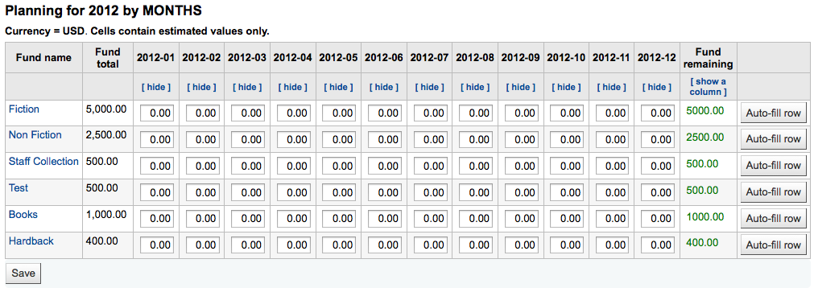
To hide some of the columns you can click the ‘hide’ link to the right (or below as in the screenshot above) the dates. To add more columns you can click the ‘Show a column’ link found below the ‘Fund remaining’ heading.

From here you can plan your budget spending by manually entering values or by clicking the ‘Auto-fill row’ button. If you choose to auto-fill the form the system will try to divide the amount accordingly, you may have to make some edits to split things more accurately.

Once your changes are made, click the ‘Save’ button. If you would like to export your data as a CSV file you can do so by entering a file name in the ‘Output to a file named’ field and clicking the ‘Output’ button.
EDI accounts
From here you can set up the information needed to connect to your acquisitions vendors.
注释
Before you begin you will need at least one Vendor set up in Acquisitions.
To add account information click the ‘New account’ button.

In the form that appears you will want to enter your vendor information.
See the EDI questions for vendors section of the acquisitions module chapter for a description of each field.
Each vendor will have one account.
Library EANs
A library EAN is the identifier the vendor gives the library to send back to them so they know which account to use when billing. One EDI account can have multiple EANs.
To add an EAN click the ‘New EAN’ button.
In the form that appears enter the information provided by your vendor.
See the EDI questions for vendors section of the acquisitions module chapter for a description of each field.
Additional parameters
Get there: More > Administration > Additional parameters
Z39.50/SRU servers
Z39.50 is a client/server protocol for searching and retrieving information from remote computer databases, in short it’s a tool used for copy cataloging.
SRU- Search/Retrieve via URL - is a standard XML-based protocol for search queries, utilizing CQL - Contextual Query Language - a standard syntax for representing queries.
Using Koha you can connect to any Z39.50 or SRU target that is publicly available or that you have the log in information to and copy both bibliographic and/or authority records from that source.
Get there: More > Administration > Additional parameters > Z39.50/SRU servers
Koha comes with a default list of Z39.50/SRU targets set up that you can add to, edit or delete

To find additional Z39.50 targets you use IndexData’s IRSpy: http://irspy.indexdata.com or the Library of Congress’s list of targets http://www.loc.gov/z3950/
Add a Z39.50 target
From the main Z39.50 page, click ‘New Z39.50 server’
‘Z39.50 server’ should be populated with a name that will help you identify the source (such as the library name).
‘Hostname’ will be the address to the Z39.50 target.
‘Port’ tells Koha what port to listen on to get results from this target.
‘Userid’ and ‘Password’ are only required for servers that are password protected.
Check the ‘Preselected’ box if you want this target to always be selected by default.
‘Rank’ lets you enter where in the list you’d like this target to appear.
If this is left blank the targets will be in alphabetical order.
‘Attributes’ lets you define PQF attributes to be added to all queries.
‘Syntax’ is the MARC flavor you use.
‘Encoding’ tells the system how to read special characters.
‘Timeout’ is helpful for targets that take a long while. You can set the timeout so that it doesn’t keep trying the target if results aren’t found in a reasonable amount of time.
‘Record type’ lets you define if this is a bibliographic or an authority target.
‘XSLT file(s)’ lets enter one or more (comma-separated) XSLT file names that you want to apply on the search results.
When retrieving records from external targets you may wish to automate some changes to those records. XSLT’s allow you to do this. Koha ships with some sample XSLT files in the /koha-tmpl/intranet-tmpl/prog/en/xslt/ directory ready for use:
Del952.xsl: Remove items (MARC21/NORMARC)
Del995.xsl: Remove items (UNIMARC)
Del9LinksExcept952.xsl: Remove $9 links. Skip item fields (MARC21/NORMARC)
Del9LinksExcept995.xsl: Remove $9 links. Skip item fields (UNIMARC)
Suggested bibliographic Z39.50 targets
Koha libraries with open Z39.50 targets can share and find connection information on the Koha wiki: http://wiki.koha-community.org/wiki/Koha_Open_Z39.50_Sources. You can also find open Z39.50 targets by visiting IRSpy: http://irspy.indexdata.com.
The following targets have been used successfully by other Koha libraries (in the Americas):
ACCESS PENNSYLVANIA 205.247.101.11:210 INNOPAC
CUYAHOGA COUNTY PUBLIC webcat.cuyahoga.lib.oh.us:210 INNOPAC
GREATER SUDBURY PUBLIC 216.223.90.51:210 INNOPAC
HALIFAX PUBLIC catalog.halifaxpubliclibraries.ca:210 horizon
HALTON HILLS PUBLIC cat.hhpl.on.ca:210 halton_hills
LIBRARY OF CONGRESS lx2.loc.gov: 210 LCDB
LONDON PUBLIC LIBRARY catalog.londonpubliclibrary.ca:210 INNOPAC
MANITOBA PUBLIC library.gov.mb.ca:210 horizon
MILTON PL cat.mpl.on.ca:210 horizon
NATIONAL LIBRARY OF WALES cat.llgc.org.uk:210 default
NHUPAC 199.192.6.130:211 nh_nhupac
OCEAN STATE LIBRARIES (RI) catalog.oslri.net:210 INNOPAC
OHIOLINK olc1.ohiolink.edu:210 INNOPAC
PUBCAT prod890.dol.state.vt.us:2300 unicorn
SAN JOAQUIN VALLEY PUBLIC LIBRARY SYSTEM (CA) hip1.sjvls.org:210 ZSERVER
SEATTLE PUBLIC LIBRARY ZSERVER.SPL.ORG:210 HORIZON
TORONTO PUBLIC symphony.torontopubliclibrary.ca:2200 unicorn
TRI-UNI 129.97.129.194:7090 voyager
VANCOUVER PUBLIC LIBRARY z3950.vpl.ca:210 Horizon
Add a SRU target
From the main Z39.50/SRU page, click ‘New SRU server’

‘Server name’ should be populated with a name that will help you identify the source (such as the library name).
‘Hostname’ will be the address to the Z39.50 target.
‘Port’ tells Koha what port to listen on to get results from this target.
‘Userid’ and ‘Password’ are only required for servers that are password protected.
Check the ‘Preselected’ box if you want this target to always be selected by default.
‘Rank’ lets you enter where in the list you’d like this target to appear.
If this is left blank the targets will be in alphabetical order.
‘Syntax’ is the MARC flavor you use.
‘Encoding’ tells the system how to read special characters.
‘Timeout’ is helpful for targets that take a long while. You can set the timeout so that it doesn’t keep trying the target if results aren’t found in a reasonable amount of time.
‘Additional SRU options’ is where you can enter additional options of the external server here, like sru_version=1.1 or schema=marc21, etc. Note that these options are server dependent.
‘SRU Search field mapping’ lets you add or update the mapping from the available fields on the Koha search form to the specific server dependent index names.
To further refine your searches, you could add the following index names to the SRU search field mappings. To do this, edit the server and click the Modify button next to this field.
Title
dc.title
ISBN
bath.isbn
Any
cql.anywhere
Author
dc.author
ISSN
bath.issn
Subject
dc.subject
Standard ID
bath.standardIdentifier
Table: SRU mapping
‘XSLT file(s)’ lets enter one or more (comma-separated) XSLT file names that you want to apply on the search results.
When retrieving records from external targets you may wish to automate some changes to those records. XSLT’s allow you to do this. Koha ships with some sample XSLT files in the /koha-tmpl/intranet-tmpl/prog/en/xslt/ directory ready for use:
Del952.xsl: Remove items (MARC21/NORMARC)
Del995.xsl: Remove items (UNIMARC)
Del9LinksExcept952.xsl: Remove $9 links. Skip item fields (MARC21/NORMARC)
Del9LinksExcept995.xsl: Remove $9 links. Skip item fields (UNIMARC)
Did you mean?
Get there: More > Administration > Additional parameters > Did you mean?
Koha can offer ‘Did you mean?’ options on searches based on values in your authorities.
重要
Did you mean? only works in the OPAC at this time. The intranet options are here for future development.
Using this page you can control which options Koha gives patrons on their search results.

To turn on the ‘Did you mean?’ bar on your search results you need to check the box next to each plugin you would like to use. The two plugins you have to choose from are:
The ExplodedTerms plugin suggests that the user try searching for broader/narrower/related terms for a given search (e.g. a user searching for “New York (State)” would click the link for narrower terms if they’re also interested in “New York (City)”). This is only relevant for libraries with highly hierarchical authority data.
The AuthorityFile plugin searches the authority file and suggests the user might be interested in bibs linked to the top 5 authorities
If you want one plugin to take priority over another you simply drag it above the other.

If you choose both plugins you will see several options at the top of your search results
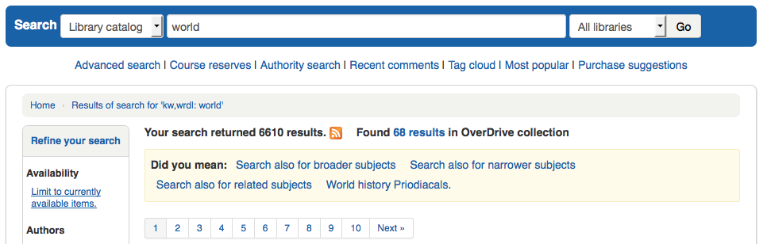
If you choose just the AuthorityFile you’ll see just authorities.

Table settings
This administration area will help you hide or display columns on fixed tables throughout the staff interface and OPAC.
Get there: Administration > Additional parameters > Table settings
Clicking on the module you’d like to edit tables for will show you the options available to you.
This area lets you control the columns that show in the table in question. If nothing is hidden you will see no check marks in the ‘is hidden by default’ column.

And will see all of the columns when viewing the table on its regular page.
If columns are hidden they will have checks in the ‘is hidden by default’ column.
And hidden when you view the table.

The ‘Cannot be toggled’ column is used to prevent individual users from showing or hiding this column when viewing the table.
Individual users can toggle columns using the ‘Columns’ button at the top of the table.

For example, in the Currencies table, the ‘Currency’ and ‘Rate’ columns cannot be toggled. When the user clicks on the ‘Columns’ button, they are not able to choose whether these two columns are hidden or visible.
Note that using the ‘Columns’ button show or hide columns will only toggle them for the current user and session. Once the user logs out, the columns will go back to their default settings as set in the table settings administration page. It will not affect any other user.
Module |
Tables |
|---|---|
Acquisitions |
|
管理 |
|
Authorities |
There aren’t any tables that can be configured from the Authorities module. |
Catalog |
|
Cataloging |
|
Circulation |
|
Course reserves |
|
Interlibrary loans |
|
Patrons |
|
Point of sale |
|
Tools |
|
OPAC |
|
Reports |
|
Serials |
|
注解
Patrons in the OPAC can’t toggle column visibility. For OPAC tables this feature only allows to control the visibility of columns.
注解
Any tables with columns listed here also have the option to export to Excel, export to CSV, copy, or print within the table header.
Audio alerts
If you have your AudioAlerts preference set to ‘Enable’ you will be able to control the various alert sounds that Koha uses from this area.
Get there: More > Administration > Additional parameters > Audio alerts
Each dialog box in Koha has a CSS class assigned to it that can be used as a selector for a sound.

You can edit the defaults by clicking the ‘Edit’ button to the right of each alert.

You can assign alerts to other CSS classes in Koha by entering that information in the selector box. For example if you enter
body:contains('Check in message')
Then when you visit the check-in page you will hear an alert.
Every page in Koha has a unique ID in the body tag which can be used to limit a sound to a specific page
Any ID selector (where HTML contains id=”name_of_id” ) and can also be a trigger as: #name_of_selector
SMS cellular providers
重要
This option will only appear if the SMSSendDriver preference is set to ‘Email’
From here you can enter as many cellular providers as you need to send SMS notices to your patrons using the email protocol.

Some examples in the US are:
Mobile Carrier |
SMS Gateway Domain |
|---|---|
Alltel |
sms.alltelwireless.com |
AT&T |
txt.att.net |
Boost Mobile |
sms.myboostmobile.com |
Project Fi |
msg.fi.google.com |
Republic Wireless |
text.republicwireless.com |
Sprint |
messaging.sprintpcs.com |
T-Mobile |
tmomail.net |
U.S. Cellular |
email.uscc.net |
Verizon Wireless |
vtext.com |
Virgin Mobile |
vmobl.com |
Table: SMS provider examples
To add new providers enter the details in the form and click ‘Add new’ to save.
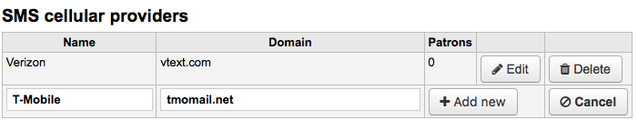
These options will appear in the OPAC for patrons to choose from on the messaging tab if you have EnhancedMessagingPreferences enabled.

Share your usage statistics
You can share your Koha usage statistics with the Hea community. Sharing your usage statistics helps with the development of Koha as the community regularly checks these statistics to make decisions.
Note that statistics are anonymized and no patron information is shared.
Worldwide statistics can be viewed at https://hea.koha-community.org/

Share my Koha usage statistics:
The default choice is ‘Undecided’, this make the message appear on the administration main page.
Choose ‘yes’ if you want to share your usage statistics
Choose ‘no’ if you don’t want to share your statistics and you don’t want to see the message on the administration page
Your country: choose the country where your library is located
Library name: enter your library’s name
Library type: choose your library’s type
Library URL: enter your library’s Web site URL
Last update: here your will see the last date when your data was uploaded to the Hea website
Geolocation: use the map on the right to put the marker where your main library is situated. The coordinates will appear in the Geolocation field.
Libraries information: if you have more than one branch, you can choose ‘yes’ here to put all your branches on the map
See your public page: this is the URL to your information on the Hea website.
Click ‘Update your statistics usage’ to save the information.
Share content with Mana KB
Mana KB is a worldwide knowledge base used to share content specific to libraries. Koha is currently connected to Mana Kb in order to share serial subscription models and reports. This section is used to configure your connexion with Mana KB.
Get there: More > Administration > Additional parameters > Share content with Mana KB

In the form, choose whether you want to use Mana KB to share content or not. The default is “No, let me think about it”. If you do want to use Mana KB, change the option to “Yes”. If you do not want to share with Mana KB, choose “No”, this will remove the blue rectangle from the Administration home page.
The rest of this section assumes you chose “Yes”.
Choose whether you want to share your subscription models automatically. This means that every time you create a subscription in the serials module, it will be automatically shared with Mana KB and other libraries will be able to copy it.
In order to configure Mana KB, you must get a Mana KB token to authenticate your Koha installation on the Mana KB server.
Enter your name or your organization’s name in the “Your name” field.
Enter your email in the “Email” field. Make sure you have access to this email inbox since you will receive further information by email.
Once you send your information to Mana KB, you will get a Mana KB token.

In the email your receive, click on the confirmation link and confirm you are not a robot to finish the Mana KB setup.
Additional fields
This section is used to add custom fields to serial subscriptions or order baskets.
To add a new field, first choose which table you want to add it to.
Order baskets (aqbasket): a field added to aqbasket will appear upon the creation of a new order basket or the modification of an existing order basket in the acquisitions module.
Subscriptions (subscription): a field added to subscription will appear when creating a new subscription or when editing an existing subscription in the serials module.

Click on “Create field”
Fill out the form
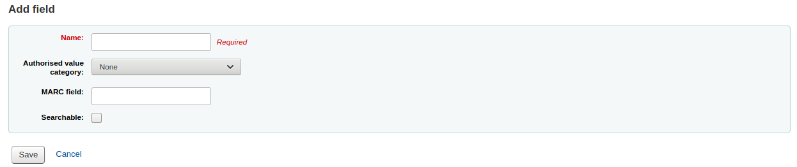
Name: this is the name of the field as you want it to appear.
Authorized value category: if you want to add a drop-down menu to the field choose an authorized value category here (you can also create a new authorized value category if you need to).
MARC field: for additional subscription fields, it is possible to link the field to a MARC field. The additional field will be automatically populated with the corresponding record’s value for this MARC field.
注解
You can only choose one of the two options (authorized value OR MARC field)
警告
If you choose the MARC field, make sure you enter it in this format: field$subfield
For example: 590$a
Searchable: check this box if you want to be able to search baskets or subscriptions based on this field
Order basket searchable additional fields will be available in the orders advanced search form
Subscription searchable additional fields will be available in the subscription advanced search form
Examples of additional fields
Example 1: Additional subscription field using authorized values
You might want to track which department you’re ordering this serial for
In the ‘Name’ field, enter ‘Department’
In the ‘Authorized value category’ field, choose DEPARTMENT
Check the ‘Searchable’ box

When you are adding a subscription, the field will be in the ‘Additional fields’ section with its authorized values drop-down menu.
When you view the subscription, the field will appear under ‘Additional fields’.
Because we made the field searchable, it will also be in the serials subscription search.
Example 2: Additional field using MARC field
This is particularly useful if you want to view bibliographic information in the subscription detail page. In this example, we will add the 521$a field, which is, in MARC21, the target audience note.
In the ‘Name’ field, enter ‘Target audience’
In the ‘MARC field’ field, enter ‘521$a’
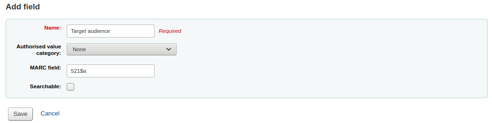
注解
You will not be able to edit this field from the subscription form. If you need to add or change the value in this field, you must go through the cataloging module.
When you view the subscription, the field and the information from the bibliographic record will appear under ‘Additional fields’.